<!doctype html>
<html lang="en">
<head>
  <meta charset="utf-8">
  <meta name="viewport" content="width=device-width, initial-scale=1">
  <title>arxiv digest — 2026-06-16</title>
  <style>
:root {
  --bg: #ffffff;
  --fg: #1f2328;
  --muted: #59636e;
  --border: #d0d7de;
  --card: #f6f8fa;
  --link: #0969da;
}
body {
  max-width: 980px;
  margin: 0 auto;
  padding: 2rem 1rem 5rem;
  font-family: -apple-system, BlinkMacSystemFont, "Segoe UI", Helvetica, Arial, sans-serif;
  line-height: 1.55;
  color: var(--fg);
  background: var(--bg);
}
a { color: var(--link); }
img { max-width: 100%; height: auto; }
pre, code { background: var(--card); border-radius: 6px; }
pre { padding: 1rem; overflow-x: auto; }
blockquote { border-left: 4px solid var(--border); padding-left: 1rem; color: var(--muted); }
details { margin: 0.6rem 0; }
summary { cursor: pointer; font-weight: 600; }
.paper-figures-scroll {
  display: flex;
  gap: 1rem;
  overflow-x: auto;
  overscroll-behavior-x: contain;
  padding: 0.75rem 0.25rem 1rem;
  margin: 1rem 0 1.25rem;
  border-top: 1px solid var(--border);
  border-bottom: 1px solid var(--border);
  scroll-snap-type: x proximity;
}
.paper-figure-card {
  flex: 0 0 min(260px, 72vw);
  scroll-snap-align: start;
  background: var(--card);
  border: 1px solid var(--border);
  border-radius: 12px;
  padding: 0.55rem;
}
.paper-figure-card img {
  display: block;
  width: 100%;
  max-height: 240px;
  object-fit: contain;
  background: white;
  border-radius: 8px;
}
.paper-figure-caption {
  display: block;
  margin-top: 0.5rem;
  color: var(--muted);
  font-size: 0.85rem;
}
.figure-strip-hint {
  color: var(--muted);
  font-size: 0.9rem;
  margin-bottom: -0.3rem;
}
</style>
  <!-- MathJax: renders $...$ inline math and $$...$$ display math, plus
       \(...\) and \[...\]. Loaded from the official CDN; works offline
       once cached. Configured to skip code/pre blocks so arxiv IDs that
       look like dollar amounts don't get mangled. -->
  <script>
    window.MathJax = {
      tex: {
        inlineMath: [['$', '$'], ['\\(', '\\)']],
        displayMath: [['$$', '$$'], ['\\[', '\\]']],
        processEscapes: true,
        processEnvironments: true
      },
      options: {
        skipHtmlTags: ['script', 'noscript', 'style', 'textarea', 'pre', 'code'],
        ignoreHtmlClass: 'tex2jax_ignore',
        processHtmlClass: 'tex2jax_process'
      }
    };
  </script>
  <script id="MathJax-script" async
    src="https://cdn.jsdelivr.net/npm/mathjax@3/es5/tex-chtml.js"></script>
</head>
<body>
<header style="background-color: #333; color: white; padding: 15px; margin-bottom: 20px;">
  <h1 style="margin: 0; font-size: 24px;">
    <a href="https://ochelpan.github.io/arXiv_clean/" style="color: white; text-decoration: none;">Main</a>
  </h1>
</header>

<h1>Daily arXiv Report</h1>

<hr>
<p>
<a href="index.html">← Index</a>
 · <a href="papers_02.html">Next →</a>
</p>
<hr>

<h2>Papers 1–20</h2>
<p><a id="paper-2606.14985"></a></p>
<h3 id="optical-creation-of-synthetic-microgravity-for-quantum-degenerate-gases">⭐ <a href="http://arxiv.org/abs/2606.14985v1">Optical Creation of Synthetic Microgravity for Quantum Degenerate Gases</a></h3>
<p><strong>Highlighted author(s):</strong> Murray Holland<br>
<strong>Authors:</strong> Catie LeDesma, Kendall Mehling, Tristan Rojo, Murray Holland<br>
<strong>Type:</strong> experiment · <strong>Category:</strong> other · <strong>PDF:</strong> <a href="https://arxiv.org/pdf/2606.14985v1">https://arxiv.org/pdf/2606.14985v1</a><br>
<strong>Analysis basis:</strong> full PDF text, analyzed in chunks
<strong>Topic relevance:</strong> 🔥 <code>analog quantum simulation</code> <strong>4/5</strong> · <code>interference shaping light</code> <strong>3/5</strong> · <code>quantum measurements</code> <strong>2/5</strong> · <code>quantum optics experiment</code> <strong>2/5</strong> · <code>QC/QI experiment</code> <strong>1/5</strong> · <code>non-equilibrium dynamics</code> <strong>1/5</strong></p>
<div class="figure-strip-hint">↔ Scroll figures horizontally</div>
<div class="paper-figures-scroll">
<figure class="paper-figure-card">
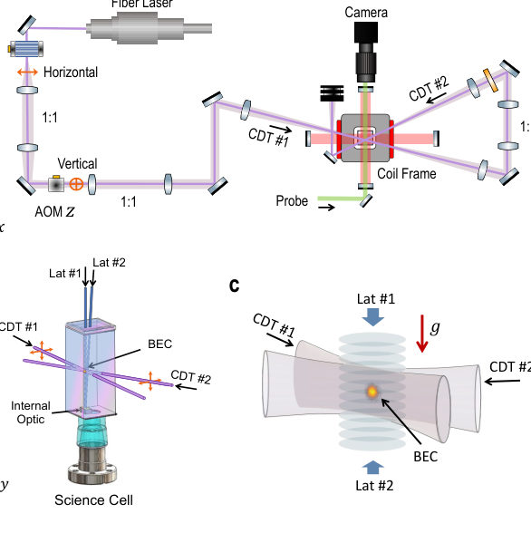
<figcaption class="paper-figure-caption"><b>Fig 1.</b> Fig. 1. Experimental apparatus and trapping geometry. (a) Experimental setup. A high-power optical dipole beam (purple) is generated by a fiber laser and passes through two acousto-optic modulators (AOMs) that provide beam steering along the horizontal (x) and vertical (z) directions. The beam is focused through the science chamber and recycled to form an elongated crossed-dipole trap (CDT). Magneto-optical trap (MOT) beams are shown in red, and a probe beam (green) is used for absorption imaging. (b) Illustration of the science cell and trapping geometry. The CDT beams (purple) intersect within the science chamber, while an internal optic enables implementation of a vertical optical...</figcaption>
</figure>
<figure class="paper-figure-card">
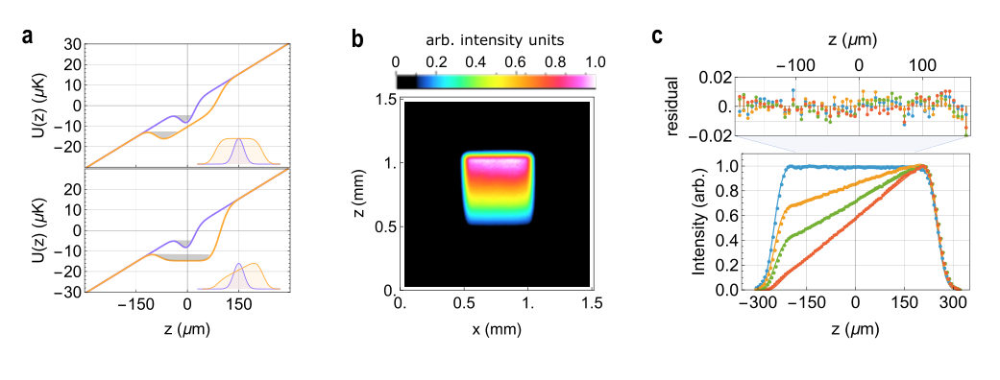
<figcaption class="paper-figure-caption"><b>Fig 2.</b> Fig. 2. Gravity compensation through engineered intensity gradients. (a) Calculated trapping potentials along the vertical axis under gravity. Upper: Comparison of a static dipole trap (purple) and a painted trap scanned over ±100 µm (orange) with no applied intensity gradient. Despite the increased trap volume, gravity localizes atoms near the lower region of the potential, indicated by the shaded gray areas. Insets show the corresponding normalized intensity profiles. Lower: Trapping potentials with an applied intensity gradient. The painted trap (orange) is scanned over ±100 µm with a gradient of approximately 78%, generating an upward optical force that compensates gravity and restores...</figcaption>
</figure>
<figure class="paper-figure-card">
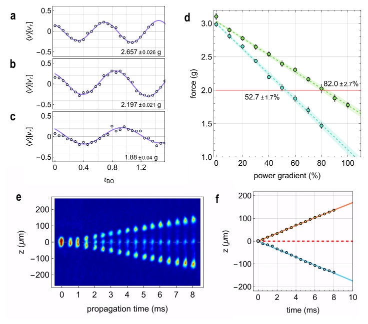
<figcaption class="paper-figure-caption"><b>Fig 3.</b> Fig. 3. Bloch-oscillation calibration of synthetic microgravity and matter-wave beam splitting. (a–c) Representative Bloch oscillation measurements for applied intensity gradients of 20%, 40%, and 60%, yielding calibrated forces of 2.657 ± 0.026 g, 2.197 ± 0.021 g, and 1.88 ± 0.04 g, respectively. (d) Forces extracted from Bloch oscillation frequencies as a function of applied intensity gradient for a ±200 µm trap (aqua) and a ±300 µm trap (green); dashed lines are linear fits. The measurements from a–c correspond to three of the points on the ±200 µm trap calibration curve. The red horizontal line marks the condition at which the magnitude of the optical force equals gravity, intersecting...</figcaption>
</figure>
<figure class="paper-figure-card">
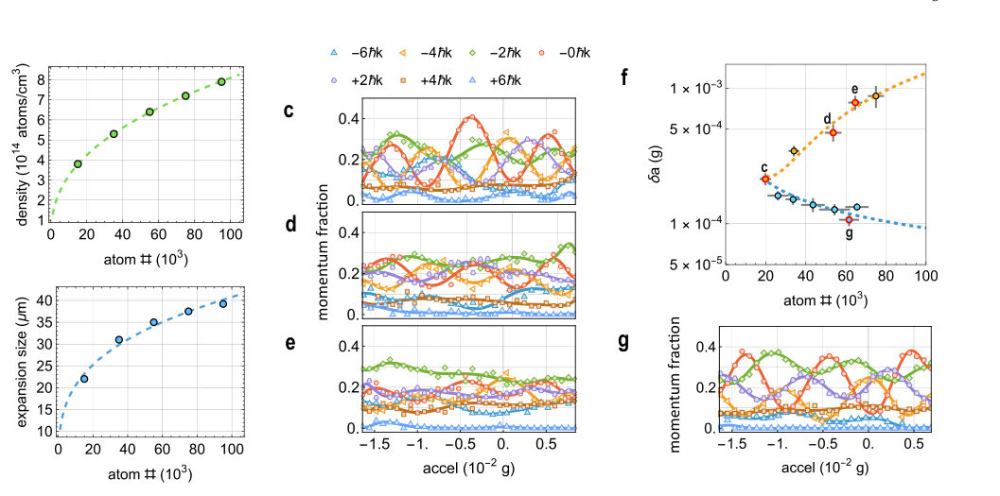
<figcaption class="paper-figure-caption"><b>Fig 4.</b> Fig. 4. Interaction-induced dephasing and its suppression via pre-expansion. (a) Peak density scaling from mean-field theory as a function of atom number for a select number of points (solid circles) in the unexpanded crossed dipole trap, following the expected n0 ∝N 2/5</figcaption>
</figure>
</div>

<p><strong>Summary.</strong> The research develops a novel technique to create synthetic microgravity for ultracold atoms by engineering optical dipole potentials to counteract Earth's gravity in terrestrial labs. This platform allows researchers to perform high-precision atom interferometry, overcoming limitations from gravitational sag and mean-field interactions by implementing controlled decompression. It establishes a powerful, continuously operating tool for quantum sensing.</p>
<p><strong>Why it may be interesting.</strong> This work provides a highly controllable, portable method to simulate space environments on Earth, allowing fundamental quantum measurements (like interferometer scaling) that are otherwise restricted to specialized facilities. It treats gravity as an actively tunable parameter within the optical potential landscape.</p>
<details>
<summary>Detailed structure</summary>
<p><strong>Main problem.</strong> Gravity imposes fundamental limitations on ultracold-atom experiments by restricting interrogation times and causing gravitational sag in trapped quantum gases.</p>
<p><strong>Main result.</strong> The authors demonstrated a versatile platform to realize synthetic microgravity in terrestrial labs, enabling high-sensitivity atom interferometry by suppressing interaction-induced dephasing via controlled expansion.</p>
<p><strong>Method.</strong> Synthetic microgravity is achieved by engineering the force landscape using dynamically painted optical dipole potentials that compensate Earth's gravity. Force calibration and dynamics are verified using Bloch oscillations and matter-wave beam splitting.</p>
<p><strong>Model / system.</strong> The system uses quantum degenerate gases (e.g., BECs) trapped in a combination of an engineered optical potential, an optical lattice, and the residual gravitational force. The total potential is actively controlled by programming the intensity profile of the dipole trap.</p>
<p><strong>Key observables.</strong> Residual acceleration (calibrated to milli-g), interferometric fringe visibility/contrast, and atom cloud trajectories via absorption imaging.</p>
<p><strong>Important parameters / regimes.</strong> Milli-g residual acceleration; $\sqrt{N}$ scaling for sensitivity; expansion times ($\approx 200$ ms); AOM modulation bandwidth ($\approx 120$ kHz).</p>
<p><strong>Assumptions / limitations.</strong> The technique assumes that the engineered force landscape can accurately mimic microgravity, and that systematic offsets in residual force are precisely characterized via Bloch oscillations.</p>
<p><strong>Figures summary.</strong> Figures show evidence of gravity compensation restoring full trap volume access; Bloch oscillation measurements quantify residual acceleration; interference fringes demonstrate sensitivity recovery toward ideal $\sqrt{N}$ scaling after controlled pre-expansion.</p>
<p><strong>Paper structure.</strong> The paper progresses from establishing the need for synthetic microgravity to demonstrating force calibration via lattice dynamics, and finally applying this stable platform to perform high-precision atom interferometry while mitigating mean-field dephasing through in situ decompression.</p>
</details>
<details>
<summary>Abstract</summary>
<p>Microgravity environments provide unique opportunities for ultracold-atom experiments by enabling long interrogation times and reduced acceleration-induced dynamics. However, their realization has largely been restricted to specialized facilities such as drop towers, sounding rockets, and space-based laboratories. Here we realize synthetic microgravity for quantum degenerate gases using optically engineered force landscapes that compensate Earth's gravity to the milli-g level while maintaining continuous confinement of the atomic ensemble. These force landscapes are generated by dynamically painted optical dipole potentials and calibrated in situ through Bloch oscillations in a vertical optical lattice, enabling precise control of the residual acceleration. We use this capability to demonstrate matter-wave beam splitting with arm separations of several hundred microns. We further implement a Bloch-band atom interferometer in which interaction-induced dephasing is strongly suppressed through controlled three-dimensional expansion in the synthetic microgravity potential. This reduction of mean-field effects restores near-$\sqrt{N}$ scaling of interferometric sensitivity for large quantum degenerate ensembles. Our results establish a versatile platform for realizing synthetic microgravity with trapped quantum gases in terrestrial laboratories, bringing the advantages of microgravity experiments to continuously operating systems and opening new opportunities for quantum sensing, matter-wave interferometry, and precision measurements.</p>
</details>
<p><sub><a href="#top">↑ back to top</a></sub></p>

<p><a id="paper-2606.15935"></a></p>
<h3 id="experimental-observation-of-dynamical-phase-transitions-in-a-dephased-photonic-quantum-walk"><a href="http://arxiv.org/abs/2606.15935v1">Experimental Observation of Dynamical Phase Transitions in a Dephased Photonic Quantum Walk</a></h3>
<p><strong>Authors:</strong> Xiaojian Huang, Lei Xiao, Bingzi Huo, Xiaowei Wang, Stefano Longhi, Peng Xue<br>
<strong>Type:</strong> experiment · <strong>Category:</strong> statistical mechanics · <strong>PDF:</strong> <a href="https://arxiv.org/pdf/2606.15935v1">https://arxiv.org/pdf/2606.15935v1</a><br>
<strong>Analysis basis:</strong> full PDF text, analyzed in chunks
<strong>Topic relevance:</strong> 🔥 <code>driven-dissipative phase transition</code> <strong>5/5</strong> · 🔥 <code>analog quantum simulation</code> <strong>4/5</strong> · 🔥 <code>non-equilibrium dynamics</code> <strong>4/5</strong> · <code>methods for driven-dissipative</code> <strong>3/5</strong> · <code>non-equilibrium universality</code> <strong>3/5</strong> · <code>quantum optics experiment</code> <strong>3/5</strong> · <code>QC/QI experiment</code> <strong>2/5</strong> · <code>correlated / nonlocal dissipation</code> <strong>1/5</strong> · <code>entanglement &amp; information structure</code> <strong>1/5</strong> · <code>interference shaping light</code> <strong>1/5</strong> · <code>quantum measurements</code> <strong>1/5</strong></p>
<div class="figure-strip-hint">↔ Scroll figures horizontally</div>
<div class="paper-figures-scroll">
<figure class="paper-figure-card">
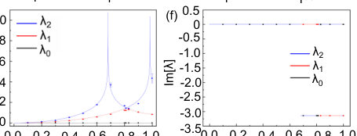
<figcaption class="paper-figure-caption"><b>Fig 1.</b> FIG. 1. First-order dynamical phase transition in the fully de- phased benchmark (q = 1) under TRS (ϕ = 0). (a),(b) Mea- sured step-resolved populations Pi(s) (i = 0, 1, 2) at β = 0.70 (&lt; βc) and β = 0.83 (&gt; βc), showing a qualitative change of the relaxation pattern. (c),(d) Corresponding components of the two non-stationary right eigenmodes r(1) and r(2) of the reconstructed transition matrix Q, labeled as the slow and fast relaxation modes according to increasing Re[λk] (solid bars: experiment with 1σ error bars; open rectangles: the- ory). (e) Real parts Re[λk] (k = 0, 1, 2) of the Floquet ex- ponents extracted from Q(β), exhibiting a diabolic crossing Re[λ1] = Re[λ2] at βc. (f)...</figcaption>
</figure>
<figure class="paper-figure-card">
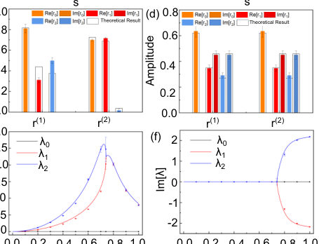
<figcaption class="paper-figure-caption"><b>Fig 2.</b> FIG. 2. Second-order dynamical phase transition in the fully dephased benchmark (q = 1) with broken TRS (ϕ = π/3). (a),(b) Measured populations Pi(s) at β = 0.70 &lt; βc and β = 1.20 &gt; βc, showing monotonic and damped-oscillatory relaxation. (c),(d) Real and imaginary components of the two non-stationary right eigenmodes r(1) and r(2) of Q (solid bars: experiment with error bars; open rectangles: theory). (e) Re[λk] versus β, showing coalescence of the two non- stationary exponents at βc. (f) Im[λk], showing the emer- gence of a complex-conjugate pair for β &gt; βc.</figcaption>
</figure>
<figure class="paper-figure-card">
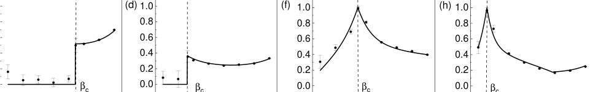
<figcaption class="paper-figure-caption"><b>Fig 3.</b> FIG. 3. Quantum-regime validation in the OQW. Experimentally measured Re[λ1,2] (top row) and eigenvector overlap g (bottom row) versus β at representative dephasing strengths. (a),(b) TRS case (ϕ = 0) at q = 0.8: a real-eigenvalue crossing signals an FOPT while g &lt; 1 confirms distinct eigenmodes. (c),(d) Same as (a),(b) but for q = 0.5. (e),(f) Broken-TRS case (ϕ = π/3) at q = 0.8: eigenvalues and eigenvectors coalesce at an EP, yielding an SOPT with g →1. (g),(h) Same as (e),(f) but for q = 0.5. Vertical dashed lines indicate βc. Solid curves are theoretical predictions; symbols are experimental data with photon-counting error bars.</figcaption>
</figure>
<figure class="paper-figure-card">
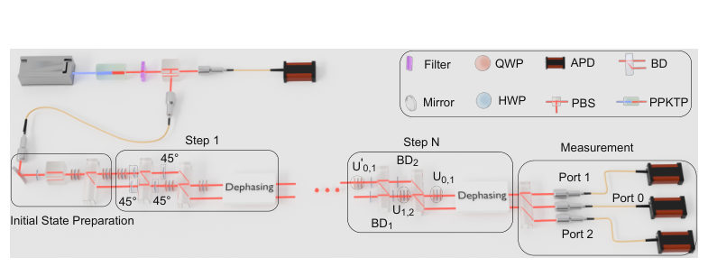
<figcaption class="paper-figure-caption"><b>Fig 4.</b> FIG. 4. Experimental schematic. Each discrete-time step of the OQW consists of a coherent unitary operation U followed by a dephasing channel. Beam displacers map the three path modes to spatially separated ports, which are detected by APDs to yield node-resolved counts. Thin outlined boxes indicate 45◦HWPs used for mode readdressing between the two BDs. Dashed ellipses mark QHQ sets implementing the two-mode unitaries Ui,j in the decomposition of U. The optical synthesis of the full 3 × 3 step unitary U is shown in the solid box.</figcaption>
</figure>
<figure class="paper-figure-card">
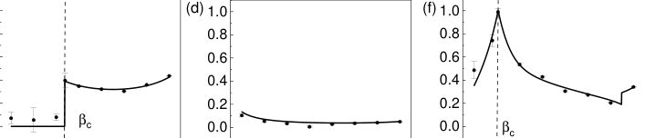
<figcaption class="paper-figure-caption"><b>Fig 5.</b> FIG. 6. Complementary scans deeper into the quantum regime. Same observables as Fig. 3, shown for q = 0.6 and 0.1. (a),(b) TRS case (ϕ = 0) at q = 0.6: the real-eigenvalue crossing persists (FOPT) and g remains below unity. (c),(d) TRS case at q = 0.1: no resolvable spectral crossing is observed and g shows no critical feature, indicating suppressed criticality. (e),(f) Broken-TRS case (ϕ = π/3) at q = 0.6: the EP-driven SOPT remains visible through simultaneous eigenvalue and eigenvector coalescence (g →1). (g),(h) Broken-TRS case at q = 0.1: the EP signature and the corresponding peak in g are washed out. Vertical dashed lines indicate βc where a critical point is identifiable.</figcaption>
</figure>
</div>

<p><strong>Summary.</strong> The research experimentally explores dynamical phase transitions in open quantum systems using a photonic quantum walk. By controlling dephasing and synthetic magnetic flux, the authors successfully observe both first-order (FOPT) and second-order (SOPT) transitions. This work establishes a programmable platform for engineering dissipative dynamics by linking spectral properties to relaxation criticality.</p>
<p><strong>Why it may be interesting.</strong> This work provides an unprecedentedly controllable platform—using photonics—to experimentally map out the rich phase diagram of dissipative quantum dynamics, linking spectral topology directly to relaxation criticality in a highly tunable manner.</p>
<details>
<summary>Detailed structure</summary>
<p><strong>Main problem.</strong> The study investigates dynamical phase transitions (DPTs) in open quantum systems, which govern how non-equilibrium states relax toward a stationary state.</p>
<p><strong>Main result.</strong> The authors experimentally demonstrated both first-order (FOPT) and second-order (SOPT) DPTs by controlling dephasing strength and synthetic gauge flux in a photonic quantum walk platform.</p>
<p><strong>Method.</strong> The dynamics are analyzed by reconstructing the Floquet-Liouvillian superoperator from single-photon measurements to extract eigenvalues, which diagnose the nature of the phase transition via crossings or coalescence at exceptional points.</p>
<p><strong>Model / system.</strong> The system is a discrete-time photonic quantum walk (OQW) implemented on a three-node graph using a single-photon interferometric network. The dynamics are governed by a master equation incorporating tunable dephasing ($q$) and synthetic gauge flux ($\phi$).</p>
<p><strong>Key observables.</strong> Eigenvalue crossings (for FOPT), coalescence of eigenvalues/eigenvectors at Exceptional Points (EPs) (for SOPT), and order parameters like the eigenvalue splitting $\Delta\lambda$ and eigenmode overlap $g$.</p>
<p><strong>Important parameters / regimes.</strong> Dephasing strength ($q$), synthetic gauge flux ($\phi$), and the evolution parameter ($eta$). The transitions are shown to persist down to a finite threshold.</p>
<p><strong>Assumptions / limitations.</strong> The analysis relies on reconstructing the transition matrix from measured probabilities and assumes that the observed spectral features accurately map onto theoretical predictions for DPTs.</p>
<p><strong>Figures summary.</strong> Figures illustrate the FOPT in the fully dephased limit ($\phi=0$) showing eigenvalue crossings, and the SOPT in the broken TRS regime ($\phi=\pi/3$) showing EP signatures. Scaling laws near EPs are also presented.</p>
<p><strong>Paper structure.</strong> The paper establishes the theoretical framework of DPTs in open systems using a photonic OQW model. It then details experimental measurements to diagnose FOPT (TRS-preserving) and SOPT (TRS-breaking), demonstrating control over these transitions by tuning dephasing and flux, and confirming scaling laws near EPs.</p>
</details>
<details>
<summary>Abstract</summary>
<p>Dynamical phase transitions in open quantum systems govern how non-equilibrium states relax toward a stationary state. We study these transitions experimentally using a discrete-time photonic quantum walk on a three-node graph. A tunable synthetic gauge flux and calibrated dephasing allow us to control time-reversal symmetry and the detailed balance properties of the effective Markovian dynamics. With detailed balance, we observe a first-order dynamical phase transition marked by a crossing of real Liouvillian eigenvalues. When detailed balance is broken, we observe a second-order dynamical phase transition at an exceptional point where eigenvalues and eigenvectors coalesce. By progressively reducing the dephasing strength, we track the crossover toward the quantum-coherent regime and determine that the transitions persist down to a finite threshold. Our results link Liouvillian spectral topology to relaxation criticality and demonstrate a controllable platform for engineered dissipative dynamics.</p>
</details>
<p><sub><a href="#top">↑ back to top</a></sub></p>

<p><a id="paper-2606.15605"></a></p>
<h3 id="dressed-floquet-scars-from-protected-zero-modes-in-a-rydberg-chain"><a href="http://arxiv.org/abs/2606.15605v1">Dressed Floquet scars from protected zero modes in a Rydberg chain</a></h3>
<p><strong>Authors:</strong> Saptadip Roy, Bhaskar Mukherjee, K. Sengupta, Arnab Sen<br>
<strong>Type:</strong> theory · <strong>Category:</strong> other · <strong>PDF:</strong> <a href="https://arxiv.org/pdf/2606.15605v1">https://arxiv.org/pdf/2606.15605v1</a><br>
<strong>Analysis basis:</strong> full PDF text, analyzed in chunks
<strong>Topic relevance:</strong> 🔥 <code>scars &amp; prethermalization</code> <strong>5/5</strong> · 🔥 <code>analog quantum simulation</code> <strong>4/5</strong> · 🔥 <code>non-equilibrium dynamics</code> <strong>4/5</strong> · <code>Rydberg arrays</code> <strong>3/5</strong> · <code>methods for driven-dissipative</code> <strong>3/5</strong> · <code>driven-dissipative phase transition</code> <strong>2/5</strong> · <code>non-equilibrium universality</code> <strong>2/5</strong> · <code>Frenkel-Kontorova</code> <strong>1/5</strong> · <code>Keldysh / 2PI / non-Gaussian methods</code> <strong>1/5</strong> · <code>entanglement &amp; information structure</code> <strong>1/5</strong></p>
<div class="figure-strip-hint">↔ Scroll figures horizontally</div>
<div class="paper-figures-scroll">
<figure class="paper-figure-card">
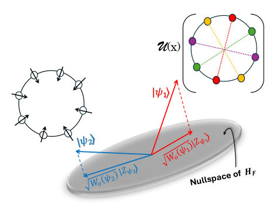
<figcaption class="paper-figure-caption"><b>Fig 1.</b> FIG. 1. Schematic representation of the anomalous zero modes, |Zψ⟩(Eq. 5), in the nullspace of the Floquet Hamilto- nian HF (Eq. 3). These zero modes can be viewed as projec- tion of two parent states on this nullspace. |ψ1⟩represents a highly entangled Ivanov-Motrunich scar state with the antipo- dal spins being perfectly correlated, but after a local unitary rotation U(x) of all spins by an angle (Eq. 8). |ψ2⟩represents the unentangled Rydberg vacuum state.</figcaption>
</figure>
<figure class="paper-figure-card">
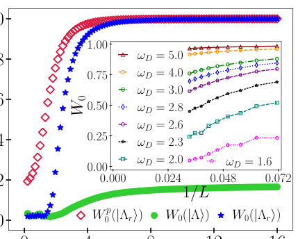
<figcaption class="paper-figure-caption"><b>Fig 2.</b> FIG. 2. W0(|Λ⟩) (filled green circles) and W0(|Λr⟩) (filled blue asterisks) plotted for L = 28 at x = 1.2 as a function of ωD. A perturbative calculation of HF up to 3rd order in FPT yields the plot of overlap of |Λr⟩(open red diamonds) with the zero mode subspace of the perturbative HF (Eq. 6). Inset shows W0(|Λr⟩) as a function of 1/L for x = 1.2 and several ωD near the knee regime where 14 ≤L ≤30. All frequencies are measured in units of w0/ℏ.</figcaption>
</figure>
<figure class="paper-figure-card">
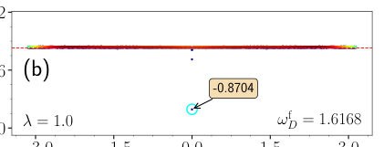
<figcaption class="paper-figure-caption"><b>Fig 3.</b> FIG. 4. Plot of ⟨Sz⟩:= 1 L P</figcaption>
</figure>
<figure class="paper-figure-card">
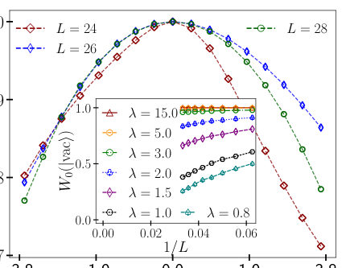
<figcaption class="paper-figure-caption"><b>Fig 4.</b> FIG. 3. W0(|vac⟩) for λ = 30 in the neighborhood of the largest drive frequency ωf D = 15.09954 which maximizes W0(|vac⟩). The inset shows W0(|vac⟩) as a function of 1/L using 16 ≤L ≤30 for different λ where ωD is tuned to the largest ωf D(λ) that maximizes W0(|vac⟩). All energies (fre- quencies) are measured in units of w0(w0/ℏ).</figcaption>
</figure>
<figure class="paper-figure-card">
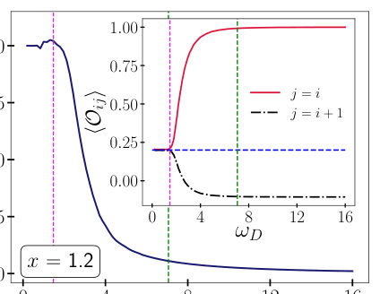
<figcaption class="paper-figure-caption"><b>Fig 5.</b> FIG. 5. Plot of the R[Hrot F ] as a function of ωD for L = 28 in the K = 0, P = +1 sector using a fixed x = 1.2. The vertical dotted lines (magenta and green) show the onset of the two plateaus at ωD ≈1.48 and ωD ≈7.06 in Fig. 2 (main text). The inset shows time-averaged spin-spin correlation ⟨Oij⟩= ⟨σz i σz L/2+j⟩starting from |Λr⟩for the same system size L = 28 at x = 1.2. The average has been taken from n = 5001 to n = 6000 stroboscopic cycles for each ωD. A horizontal blue dotted line at 0.2 is given as a guide to the eye. The vertical dotted line in green (magenta) corresponds to the onset of the first (second) plateau at ωD ≈7.06 (ωD ≈1.48) in Fig. 2. All frequencies are measured in...</figcaption>
</figure>
</div>

<p><strong>Summary.</strong> The paper theoretically constructs and analyzes two robust quantum many-body scars—one related to the vacuum state and another derived from a known scar—in a Rydberg atom chain subjected to periodic driving. By using advanced techniques like Floquet perturbation theory, the authors demonstrate that these scars persist even when the system parameters are varied significantly, providing deep insight into protected zero modes in driven quantum matter.</p>
<p><strong>Why it may be interesting.</strong> This work provides a detailed, analytical understanding of how symmetry protection can stabilize non-trivial quantum scars in complex, periodically driven many-body systems, bridging concepts from Floquet engineering and localization theory.</p>
<details>
<summary>Detailed structure</summary>
<p><strong>Main problem.</strong> The study investigates protected zero quasienergy quantum many-body scars (QMBSs) arising from symmetry protection in a periodically driven Rydberg atom chain.</p>
<p><strong>Main result.</strong> Two distinct QMBSs, corresponding to the Rydberg vacuum and a dressed Ivanov-Motrunich scar, are analytically constructed and shown to persist over significant ranges of driving amplitudes and frequencies.</p>
<p><strong>Method.</strong> The analysis employs Floquet perturbation theory (FPT) combined with exact diagonalization (ED) on finite systems to analyze the effective Floquet Hamiltonian ($   ext{H}_F$).</p>
<p><strong>Model / system.</strong> The system is a Rydberg atom chain modeled by a time-periodic PXP Hamiltonian on a ring, whose dynamics are governed by the stroboscopic Floquet unitary $U(T, 0)$.</p>
<p><strong>Key observables.</strong> Overlap measures ($W_0$), two-point spin correlation functions ($\langle O_{i,j} 
angle$), and the Loschmidt echo ($L(nT)$) are key diagnostics.</p>
<p><strong>Important parameters / regimes.</strong> Drive amplitudes ($\lambda$) and frequencies ($\omega_D$ or $T$), which dictate whether the system is in a perturbative or nonperturbative regime.</p>
<p><strong>Assumptions / limitations.</strong> The analytic construction of zero modes relies on symmetry protection (index theorem), but the full nullspace itself changes with drive parameters, limiting the description to approximations.</p>
<p><strong>Figures summary.</strong> Figures illustrate the overlap of parent states with Floquet eigenstates, show how correlation functions retain memory effects, and map out the stability regions for the dressed scars as driving parameters are varied.</p>
<p><strong>Paper structure.</strong> The paper builds from establishing the theoretical framework using FPT and BCH expansions to derive $  ext{H}_F$, then analyzes specific parent states (vacuum and IM scar) by calculating their overlap with the nullspace of $   ext{H}_F$ across varying driving regimes.</p>
</details>
<details>
<summary>Abstract</summary>
<p>In this Letter, we present an approximate analytic construction of two zero quasienergy quantum many-body scars in a periodically driven model of Rydberg atoms on a ring, which persist over a range of driving amplitudes and frequencies for finite sizes. An index theorem protects an exponentially large number (in system size) of exact zero energy modes of the Floquet Hamiltonian in this setting. Unlike most of these zero modes which continuously change with drive parameters, these two quantum many-body scars retain the memory of particular states. They can be expressed as {\it dressed versions} of two contrasting states, the Rydberg vacuum and a unitarily rotated variant of a volume-law scar [Ivanov and Motrunich, Phys. Rev. Lett. {\bf 134}, 050403 (2025)], respectively. We provide an analytic understanding of their existence using a Floquet perturbation theory and show their resilience beyond the perturbative regime using exact diagonalization in finite systems. Our study provides insight into the structure of protected zero modes in interacting Floquet settings.</p>
</details>
<p><sub><a href="#top">↑ back to top</a></sub></p>

<p><a id="paper-2606.16017"></a></p>
<h3 id="quantum-algorithm-for-open-system-battery-cathodes-by-modeling-multiple-strongly-coupled-holstein-polarons-with-chain-mapped-caldeira-leggett-dynamics"><a href="http://arxiv.org/abs/2606.16017v1">Quantum Algorithm for Open-System Battery Cathodes by Modeling Multiple Strongly Coupled Holstein Polarons with Chain-Mapped Caldeira-Leggett Dynamics</a></h3>
<p><strong>Authors:</strong> Joshua M. Courtney<br>
<strong>Type:</strong> theory · <strong>Category:</strong> strongly correlated electrons · <strong>PDF:</strong> <a href="https://arxiv.org/pdf/2606.16017v1">https://arxiv.org/pdf/2606.16017v1</a><br>
<strong>Analysis basis:</strong> full PDF text, analyzed in chunks
<strong>Topic relevance:</strong> 🔥 <code>methods for driven-dissipative</code> <strong>5/5</strong> · 🔥 <code>Keldysh / 2PI / non-Gaussian methods</code> <strong>4/5</strong> · <code>correlated / nonlocal dissipation</code> <strong>3/5</strong> · <code>driven-dissipative phase transition</code> <strong>3/5</strong> · <code>non-equilibrium dynamics</code> <strong>3/5</strong> · <code>Kondo &amp; dissipative impurity</code> <strong>2/5</strong> · <code>non-equilibrium universality</code> <strong>2/5</strong> · <code>Frenkel-Kontorova</code> <strong>1/5</strong> · <code>quantum measurements</code> <strong>1/5</strong></p>
<div class="figure-strip-hint">↔ Scroll figures horizontally</div>
<div class="paper-figures-scroll">
<figure class="paper-figure-card">
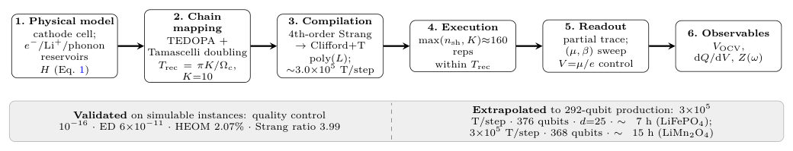
<figcaption class="paper-figure-caption"><b>Fig 1.</b> Figure 1. End-to-end workflow. The open-system cathode Hamiltonian (1) is chain-mapped (2; time-evolving density operator with orthogonal polynomials TEDOPA + Tamascelli finite-T doubling), compiled into a Clifford+T fourth-order Trotterization whose per-step T-count is polynomial in system size (3; Theorem III D), executed as a trajectory ensemble within the recurrence window (4), and read out by partial trace and an anchor sweep with V = µ/e set as a control (5) to yield the electrochemical observables (6). The band marks the boundary (Section III H) between classically-validated instances (left) and the calculated production geometry (right).</figcaption>
</figure>
<figure class="paper-figure-card">
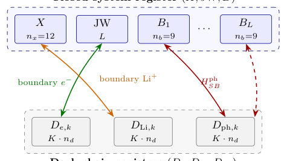
<figcaption class="paper-figure-caption"><b>Fig 2.</b> Figure 2. The tensor-product Hilbert space of the system-plus-three-reservoirs framework (LFP production geometry shown). The closed-system register (X, JW, B) couples to the three dark chain registers (De, DLi, Dph) through three bilinear cross gates, one per reservoir.</figcaption>
</figure>
<figure class="paper-figure-card">
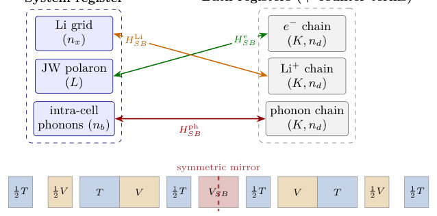
<figcaption class="paper-figure-caption"><b>Fig 3.</b> Figure 3. Architecture and Trotter-step timeline. Upper: the system register (Li coordinate, Jordan–Wigner polaron register, intra-cell phonons) couples through three bilinear interactions HSB to the chain-mapped bath registers, each carrying its Caldeira–Leggett counter-term. Lower: simplified second-order Strang step (Eq. 9) as a banded timeline of kinetic (T), potential (V ), and system–bath (VSB) layers, symmetric about the central mirror; half-steps drawn narrower.</figcaption>
</figure>
<figure class="paper-figure-card">
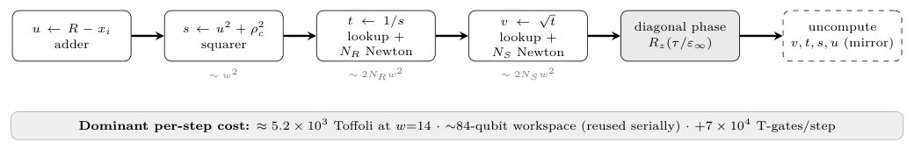
<figcaption class="paper-figure-caption"><b>Fig 4.</b> Figure 4. The reversible 1/√· evaluation of the soft-Coulomb potential. The argument u = R−xi is squared, the reciprocal and inverse-square-root computed by seeded table lookup plus Newton iteration, the occupation-controlled diagonal phase applied, and the workspace uncomputed (dashed mirror) to clear it.</figcaption>
</figure>
<figure class="paper-figure-card">
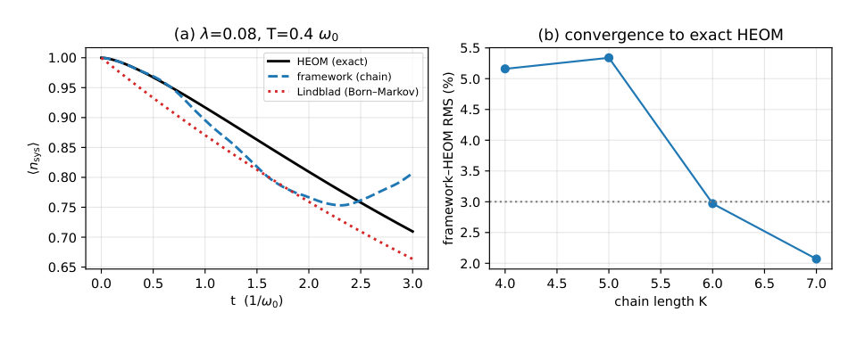
<figcaption class="paper-figure-caption"><b>Fig 5.</b> Figure 5. Strong-coupling validation against numerically exact HEOM on the shared spin-boson kernel (Drude–Lorentz J(ω), T = 0.4 ω0 ≡300 K). (a) Coupling sweep: the chain-mapped dynamics track HEOM to within a few percent across the regime where the weak-coupling Lindblad reference differs by 4–16%. (b) Chain-length convergence: the framework approaches HEOM monotonically in K, reaching 2.07% RMS on the system population at K = 7.</figcaption>
</figure>
</div>

<p><strong>Summary.</strong> The authors present a novel, fault-tolerant quantum algorithm to simulate the open-system dynamics of battery cathodes by modeling Holstein polarons coupled to multiple baths. By using a chain-mapped Caldeira-Leggett embedding, they make these traditionally intractable environmental interactions amenable to digital quantum simulation. The results validate the method against experimental data and provide concrete resource estimates for future quantum hardware.</p>
<p><strong>Why it may be interesting.</strong> This work bridges advanced quantum algorithm design (fault tolerance, high-order Trotterization) directly to a critical problem in condensed matter physics—the dynamics of strongly correlated electron systems in energy storage devices.</p>
<details>
<summary>Detailed structure</summary>
<p><strong>Main problem.</strong> Developing a fault-tolerant quantum algorithm to calculate open-system electrochemical observables for battery cathodes, which are governed by complex interactions with multiple external baths.</p>
<p><strong>Main result.</strong> The method successfully predicts key voltage plateaus for $    ext{LiMn}_2 ext{O}_4$ within $17\%$ of experiment and provides a resource estimate of $\sim 3 	imes 10^5$ T-gates per step for the full simulation.</p>
<p><strong>Method.</strong> A unitary chain-mapped Caldeira-Leggett embedding is used to render environmental baths Trotterizable, allowing the calculation of open-system dynamics on fault-tolerant quantum circuits.</p>
<p><strong>Model / system.</strong> The system models lithium-ion battery cathodes (e.g., $ ext{LiFePO}_4$, $   ext{LiMn}_2 ext{O}_4$) involving strongly coupled Holstein polarons, lattice degrees of freedom, and three distinct environmental baths ($  ext{electron},  ext{Li}^+,  ext{phonon}$).</p>
<p><strong>Key observables.</strong> Open-circuit voltage ($    ext{VOCV}$), differential capacity ($ ext{dQ}/    ext{dV}$), impedance ($   ext{Z}(\omega)$).</p>
<p><strong>Important parameters / regimes.</strong> Strong electron-lattice coupling, finite temperature ($T$), and the resource cost scaling (e.g., 368 logical qubits for $    ext{LiMn}_2 ext{O}_4$).</p>
<p><strong>Assumptions / limitations.</strong> The primary limitation is that the full production-scale dynamical run remains a milestone for future hardware, relying on fault-tolerant quantum computation.</p>
<p><strong>Figures summary.</strong> Figures detail the end-to-end workflow from Hamiltonian definition to observable extraction via chain mapping and Trotterization, illustrating the tensor-product Hilbert space structure connecting system registers to three dark chain reservoirs.</p>
<p><strong>Paper structure.</strong> The paper details the theoretical framework by first defining the open-system problem, then introducing the unitary chain-mapped Caldeira-Leggett embedding, followed by a detailed breakdown of the fourth-order Trotterization circuit decomposition into gate primitives, and concluding with resource estimates for specific materials.</p>
</details>
<details>
<summary>Abstract</summary>
<p>Cathode lithiation occupies a chemical regime of tightly localized orbitals, narrow bandwidths, and strong electron-lattice coupling. The defining electrochemical observables (open-circuit voltage and differential capacity) are open-system, reservoir-equilibration quantities that closed-Hamiltonian quantum simulation cannot produce, set by exchange with electron, Li$^+$, and phonon baths. We present a fault-tolerant quantum algorithm that recovers them through a unitary chain-mapped Caldeira-Leggett embedding, rendering the baths Trotterizable. The resulting fourth-order Trotter step has a T-gate count polynomial in system size, validating its open-system dynamics against hierarchical equations of motion (HEOM) at strong coupling and the Lindblad limit at weak coupling. For single-carrier olivine LiFePO$_4$, a single voltage anchor on an otherwise DFT-fixed Hamiltonian places the differential-capacity peak within the $\pm5$ mV reproducibility of the experimental plateau. For multi-carrier spinel LiMn$_2$O$_4$, whose $1{:}1$ Mn$^{3+}$/Mn$^{4+}$ filling makes the inter-site Coulomb repulsion dynamically active, the same kernel yields a two-plateau voltage curve with a $125$ mV split, within $17\%$ of the observed $150$ mV. We deliver an end-to-end fault-tolerant resource estimate for such a multi-carrier, three-reservoir observable: $368$ logical qubits and $\sim3\times10^5$ T-gates per step, or $\sim1.7\times10^{12}$ T-gates for a full voltage curve (parallelizable over $\sim10^3$ trajectories), leaving the production-scale dynamical run as a milestone for future hardware. The same kernel reproduces macroscopic quantum coherence, two-band superconductivity, and the Mikheyev-Smirnov-Wolfenstein resonance without modification, placing dynamical battery chemistry and similar Hamiltonians within scope for fault-tolerant quantum simulation.</p>
</details>
<p><sub><a href="#top">↑ back to top</a></sub></p>

<p><a id="paper-2606.15126"></a></p>
<h3 id="interaction-enabled-topological-pumping-of-rydberg-electrons"><a href="http://arxiv.org/abs/2606.15126v1">Interaction-enabled topological pumping of Rydberg electrons</a></h3>
<p><strong>Authors:</strong> Chenxi Huang, Tao Chen, Kaden R. A. Hazzard, Jacob P. Covey, Bryce Gadway<br>
<strong>Type:</strong> experiment · <strong>Category:</strong> other · <strong>PDF:</strong> <a href="https://arxiv.org/pdf/2606.15126v1">https://arxiv.org/pdf/2606.15126v1</a><br>
<strong>Analysis basis:</strong> full PDF text, analyzed in chunks
<strong>Topic relevance:</strong> 🔥 <code>Rydberg arrays</code> <strong>5/5</strong> · 🔥 <code>analog quantum simulation</code> <strong>4/5</strong> · <code>driven-dissipative phase transition</code> <strong>3/5</strong> · <code>non-equilibrium dynamics</code> <strong>3/5</strong> · <code>non-equilibrium universality</code> <strong>2/5</strong> · <code>correlated / nonlocal dissipation</code> <strong>1/5</strong> · <code>correlated cavity matter</code> <strong>1/5</strong> · <code>entanglement &amp; information structure</code> <strong>1/5</strong> · <code>exotic spin models in light-matter</code> <strong>1/5</strong> · <code>methods for driven-dissipative</code> <strong>1/5</strong> · <code>quantum measurements</code> <strong>1/5</strong></p>
<div class="figure-strip-hint">↔ Scroll figures horizontally</div>
<div class="paper-figures-scroll">
<figure class="paper-figure-card">
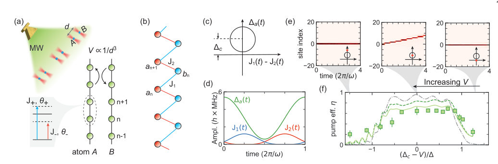
<figcaption class="paper-figure-caption"><b>Fig 1.</b> FIG. 1. Experimental scheme for interaction-enabled topological pumping of correlated Rydberg electrons. (a) An array of independent pairs of two Rydberg atoms prepared with optical tweezers (A and B) with tunable separation d are driven by multi-frequency microwave fields, forming a synthetic lattice of Rydberg states |n⟩. Each nearest-neighbor transition is coupled by two microwave tones with time-dependent amplitudes J±(t) and phases θ±(t). Dipolar exchange interactions scale as Vn ≈V ∝1/d3. (b) Effective Rice-Mele representation in the pair basis |an⟩= |n⟩A ⊗|n⟩B = |n, n⟩ and |bn⟩= |+⟩n = (|n⟩A ⊗|n + 1⟩B + |n + 1⟩A ⊗|n⟩B)/ √</figcaption>
</figure>
<figure class="paper-figure-card">
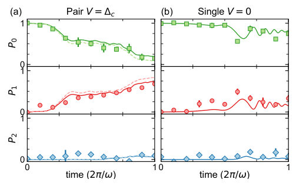
<figcaption class="paper-figure-caption"><b>Fig 2.</b> FIG. 2. Pumping dynamics for Rydberg electrons in synthetic lattices. Measured population Pn in each of the synthetic sites |n⟩over one modulation period for (a) corre- lated pairs with V = ∆c and (b) uncorrelated singles with V = 0. The pumping parameters used are: ∆c/h = 3.0 MHz, ∆/h = 2.4 MHz, J0/h = 0.3 MHz, and ω/2π = 0.3 MHz. The solid lines in each panel are numerical simulation results with the original Hamiltonian (1), by taking into account the initial state preparation inefficiency. The dashed lines in (a) indicate simulation results by assuming perfect initial state preparation. The error bars are standard errors from multi- ple independent experimental data sets.</figcaption>
</figure>
<figure class="paper-figure-card">
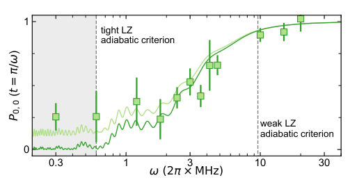
<figcaption class="paper-figure-caption"><b>Fig 3.</b> FIG. 3. Adiabaticity of the interaction-enabled topo- logical pumping. Measured population P0,0(t = π/ω) in the initial |a0⟩= |0, 0⟩state as a function of the modulating fre- quency ω. The pumping parameters used are: V/h = ∆c/h = 3.0 MHz, ∆/h = 2.4 MHz, and J0/h = 0.3 MHz. The solid light and dark lines are numerical simulation results with and without the consideration of the initial state preparation in- efficiency, respectively. The dashed vertical lines indicate the positions of critical values of ω derived from the Landau-Zener (LZ) adiabatic conditions [52]. The error bars are standard errors from multiple independent experimental data sets.</figcaption>
</figure>
<figure class="paper-figure-card">
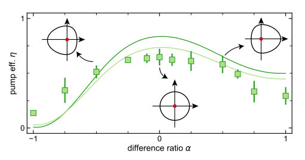
<figcaption class="paper-figure-caption"><b>Fig 4.</b> FIG. 4. Response to perturbations of the interaction- enabled topological pumping. Measured pumping effi- ciency η as a function of the difference ratio α between intra- and inter-cell coupling rates J1(t) = (1+α)J0[1+sin (ωt)]2/2 and J2(t) = (1 −α)J0[1 −sin (ωt)]2/2. The pumping param- eters used are: V/h = ∆c/h = 3.0 MHz, ∆/h = 2.4 MHz, J0/h = 0.3 MHz, and ω/2π = 0.3 MHz. The insets respec- tively correspond to three typical pumping parameter trajec- tories for α = 0 and ±0.5. The solid lines are numerical simulation results with and without the consideration of the initial state preparation inefficiency, respectively. The error bars are standard errors from multiple independent experi-...</figcaption>
</figure>
</div>

<p><strong>Summary.</strong> The researchers experimentally demonstrated interaction-enabled topological pumping of correlated Rydberg electrons in an optical lattice. They showed that tuning the dipolar exchange interaction strength allows them to controllably shift the system's topological singularity. This control enables the observation and manipulation of quantized transport, opening a pathway for engineering correlated topological matter.</p>
<p><strong>Why it may be interesting.</strong> This work directly bridges concepts from condensed matter topology (topological pumping) with state-of-the-art AMO platforms (Rydberg atoms), providing a clean, controllable system to study interaction effects beyond simple mean-field approximations.</p>
<details>
<summary>Detailed structure</summary>
<p><strong>Main problem.</strong> Investigating topological pumping in strongly correlated regimes, particularly when long-range dipolar interactions are present.</p>
<p><strong>Main result.</strong> The interaction strength can be tuned to shift the underlying topological singularity, enabling and controlling quantized directional transport through successive topological phase transitions.</p>
<p><strong>Method.</strong> Experimental observation using a two-color microwave driving protocol on Rydberg electrons in a synthetic lattice, analyzed by monitoring state populations over modulation periods.</p>
<p><strong>Model / system.</strong> The system consists of correlated Rydberg electrons trapped in an optical tweezer array. The dynamics are modeled using an effective pair-state Rice-Mele Hamiltonian incorporating dipolar exchange interactions ($V_n \propto 1/d^3$).</p>
<p><strong>Key observables.</strong> Pumping efficiency ($\eta$), state populations ($P_n$), and the location of the topological singularity relative to the pumping trajectory.</p>
<p><strong>Important parameters / regimes.</strong> Interaction strength ($V$), modulation frequency ($\omega$), and the ratio of interaction energy to hopping/detuning energies.</p>
<p><strong>Assumptions / limitations.</strong> The analysis relies on mapping the system to an effective pair-state Hamiltonian and assumes that dipolar exchange interactions are the dominant source of correlation effects.</p>
<p><strong>Figures summary.</strong> Figures illustrate the experimental setup, the derived effective model (Rice-Mele), the pumping trajectory in parameter space showing singularity shifts, and quantitative measurements comparing correlated vs. uncorrelated transport efficiencies.</p>
<p><strong>Paper structure.</strong> The paper progresses from identifying the unexplored regime (correlated topological pumping) to deriving an effective Hamiltonian via gauge transformations, demonstrating how interaction strength controls the topology, and finally presenting experimental evidence of quantized transport breakdown/emergence based on this control.</p>
</details>
<details>
<summary>Abstract</summary>
<p>Topological pumping is a paradigmatic realization of quantized transport in band systems, yet its fate in strongly correlated regimes, especially with long-range interactions, remains largely unexplored. Here we report the experimental observation of interaction-enabled topological pumping of correlated Rydberg electrons in a synthetic lattice. We show that dipolar exchange interactions induce a controllable shift of the underlying topological singularity in parameter space, such that a fixed pumping trajectory can be driven through successive topological transitions by tuning the interaction strength alone. This leads to the emergence and breakdown of quantized transport. The observations are consistent with an effective Rice-Mele description with interaction-renormalized onsite potentials and are supported by characterizing the adiabaticity and robustness to control trajectory imperfections. Our results establish a platform for exploring interaction-controlled topological transport beyond perturbative regimes and open a route toward engineering correlated topological matter in synthetic quantum systems.</p>
</details>
<p><sub><a href="#top">↑ back to top</a></sub></p>

<p><a id="paper-2606.16128"></a></p>
<h3 id="luttinger-liquid-parameters-in-one-dimensional-rydberg-arrays"><a href="http://arxiv.org/abs/2606.16128v1">Luttinger liquid parameters in one-dimensional Rydberg arrays</a></h3>
<p><strong>Authors:</strong> Shu-Ao Liao, Li-Ping Yang, Jin Zhang<br>
<strong>Type:</strong> theory · <strong>Category:</strong> other · <strong>PDF:</strong> <a href="https://arxiv.org/pdf/2606.16128v1">https://arxiv.org/pdf/2606.16128v1</a><br>
<strong>Analysis basis:</strong> full PDF text, analyzed in chunks
<strong>Topic relevance:</strong> 🔥 <code>Rydberg arrays</code> <strong>5/5</strong> · 🔥 <code>analog quantum simulation</code> <strong>4/5</strong> · <code>Frenkel-Kontorova</code> <strong>3/5</strong> · <code>entanglement &amp; information structure</code> <strong>2/5</strong> · <code>correlated cavity matter</code> <strong>1/5</strong> · <code>driven-dissipative phase transition</code> <strong>1/5</strong> · <code>non-equilibrium dynamics</code> <strong>1/5</strong> · <code>non-equilibrium universality</code> <strong>1/5</strong></p>
<div class="figure-strip-hint">↔ Scroll figures horizontally</div>
<div class="paper-figures-scroll">
<figure class="paper-figure-card">
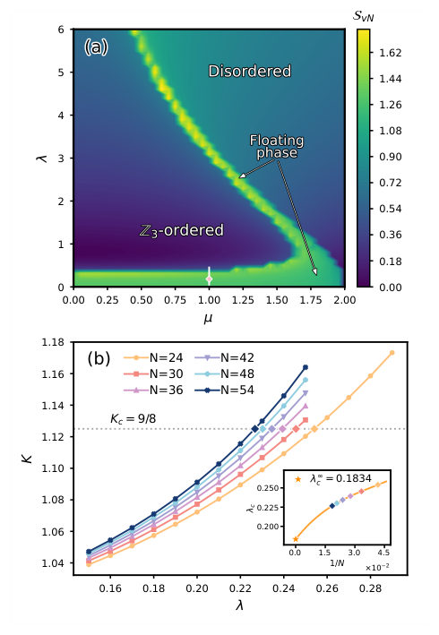
<figcaption class="paper-figure-caption"><b>Fig 1.</b> FIG. 2. (a) Ground-state phase diagram of the Z3 dual model for the quantum phase transitions out of the period-3 or- dered phase of the Rydberg chain. The phase diagram is mapped out using the von Neumann entanglement entropy SvN. The data are obtained for N = 480 with OBCs, and SvN is evaluated at the middle bond, between sites 240 and 241. The highlighted wedge-shaped region denotes the inter- mediate floating phase, which separates the Z3-ordered phase at smaller µ and λ from the disordered phase at larger µ and λ. (b) Luttinger K extracted from the crosscap overlap as a function of λ at fixed µ = 1 for different system sizes N. The horizontal line marks the theoretical BKT critical...</figcaption>
</figure>
<figure class="paper-figure-card">
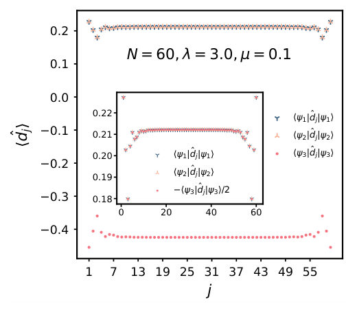
<figcaption class="paper-figure-caption"><b>Fig 2.</b> FIG. 1. Local profiles of ⟨ˆdj⟩for the three degenerate ground states |ψ1⟩, |ψ2⟩, and |ψ3⟩deep in the Z3-ordered phase, ob- tained for N = 60 as a function of the site index j. The expectation values of ˆdj in |ψ1⟩and |ψ2⟩are degenerate and have half the magnitude of that in |ψ3⟩. The inset illustrates this relation by plotting the rescaled profile −⟨ψ3| ˆdj|ψ3⟩/2, which collapses onto the profiles of |ψ1⟩and |ψ2⟩.</figcaption>
</figure>
<figure class="paper-figure-card">
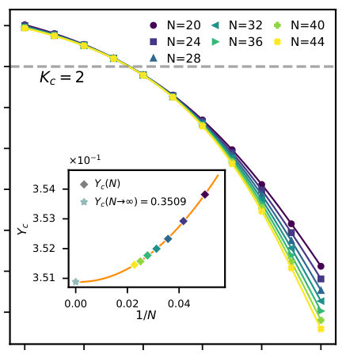
<figcaption class="paper-figure-caption"><b>Fig 3.</b> FIG. 3. The Luttinger parameter KN(Y ) for the spin-1 XY chain with single-ion anisotropy, extracted from the cross- cap overlap as a function of Y at fixed X = 1 for differ- ent system sizes N. The dashed line marks the theoreti- cal critical value Kc = 2. The crossings between KN(Y ) and Kc = 2 determine the finite-size critical points Yc(N). The inset shows the polynomial extrapolation of Yc(N) to the thermodynamic limit. The extrapolated value, indicated by the pink star, is Yc = 0.3509. The fitting function is f(1/N) = 1.2369(1/N)2 −0.0030(1/N) + 0.3509.</figcaption>
</figure>
<figure class="paper-figure-card">
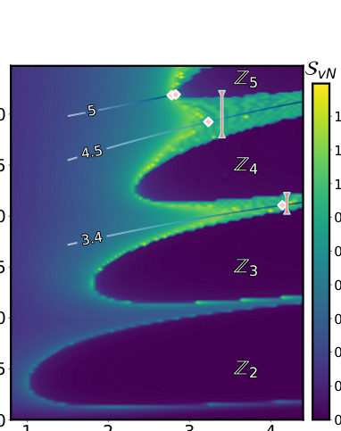
<figcaption class="paper-figure-caption"><b>Fig 4.</b> FIG. 4. Phase diagram of the one-dimensional Rydberg chain, mapped out using the von Neumann entanglement entropy SvN. The numerical results are obtained for an open chain with N = 721 sites, and SvN is evaluated at the middle bond, between sites 360 and 361. The dark lobes correspond to the Zp crystalline ordered phases, where p denotes the charac- teristic spatial period. Intermediate floating phases are ob- served between the Z3 and Z4 phases, between the Z4 and Z5 phases, and surrounding the Z5 phase on the side facing the disordered regime. The solid blue-gradient curves rep- resent lines of constant dominant wave vector k, labeled by the corresponding spatial period p = 2π/k with p =...</figcaption>
</figure>
<figure class="paper-figure-card">
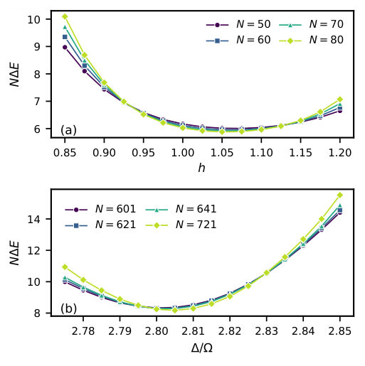
<figcaption class="paper-figure-caption"><b>Fig 5.</b> FIG. 6. Rescaled energy gap N∆E for (a) the pinned five- state clock model, defined by Eq. (8) with the boundary pin- ning term in Eq. (10), and (b) the Rydberg chain along the constant-p = 5 line. In both models, two crossings appear within the plotted parameter window, signaling two nearby BKT transitions.</figcaption>
</figure>
</div>

<p><strong>Summary.</strong> The paper rigorously investigates quantum phase transitions in 1D Rydberg atom chains by analyzing BKT transitions using multiple advanced diagnostics. It successfully extracts the universal Luttinger parameter K across different phases, confirming a complex two-step melting scenario along commensurate lines and demonstrating consistency between methods in incommensurate regimes.</p>
<p><strong>Why it may be interesting.</strong> This work provides a highly detailed, multi-diagnostic confirmation of Luttinger liquid physics and quantum phase transitions in an experimentally accessible platform (Rydberg arrays), pushing the boundaries of theoretical understanding regarding melting transitions.</p>
<details>
<summary>Detailed structure</summary>
<p><strong>Main problem.</strong> The study investigates Berezinskii-Kosterlitz-Thouless (BKT) transitions and characterizes the universal low-energy physics described by Luttinger liquid theory in one-dimensional Rydberg chains.</p>
<p><strong>Main result.</strong> The analysis confirms a two-step BKT melting scenario along commensurate lines (e.g., p=5), and shows mutual consistency between multiple diagnostic methods for extracting the Luttinger parameter K in both commensurate and incommensurate floating phases.</p>
<p><strong>Method.</strong> Multiple advanced numerical techniques are employed, including fitting Friedel oscillations using multi-harmonic schemes, applying the crosscap overlap method, analyzing entanglement entropy scaling, and performing finite-size scaling of energy gaps and Binder cumulants.</p>
<p><strong>Model / system.</strong> The system is a one-dimensional chain of Rydberg atoms trapped in optical tweezers. The dynamics are governed by an interaction Hamiltonian involving Rabi coupling ($\Omega$), laser detuning ($\Delta$), and repulsive van der Waals interactions ($V_{ij} \propto 1/|i-j|^6$).</p>
<p><strong>Key observables.</strong> Luttinger liquid parameter K, BKT transition points (critical couplings $\lambda_c$ or $\Delta/\Omega)_c$, local density modulation profiles, and Von Neumann entanglement entropy ($S_{vN}$).</p>
<p><strong>Important parameters / regimes.</strong> The blockade radius $R_b$, the correlation oscillation period $p=2\pi/k$, and dimensionless ratios like $\Delta/\Omega$.</p>
<p><strong>Assumptions / limitations.</strong> The analysis often relies on extrapolating finite-size results using polynomial fits in $1/N$ to reach the thermodynamic limit, and careful selection of parameter regimes is needed to avoid crossover interference effects.</p>
<p><strong>Figures summary.</strong> Figures illustrate phase diagrams using entanglement entropy ($S_{vN}$), compare K extracted from Friedel oscillations versus crosscap overlap along constant-period lines (e.g., p=5), and show finite-size scaling plots for critical couplings.</p>
<p><strong>Paper structure.</strong> The paper first establishes the theoretical framework by benchmarking advanced methods (crosscap, etc.) on simpler models ($Z_3$ chain). It then applies these consistent methods to analyze the Rydberg chain across different regimes: commensurate lines (showing two BKT transitions) and incommensurate floating phases (where multiple diagnostics agree).</p>
</details>
<details>
<summary>Abstract</summary>
<p>We investigate Berezinskii-Kosterlitz-Thouless (BKT) transitions in one-dimensional Rydberg chains, where commensurate critical regimes associated with the melting of crystalline orders with period larger than five and incommensurate floating phases are both described by Luttinger liquid theory. The central quantity is the Luttinger liquid parameter $K$, which characterizes the universal low-energy theory and controls the relevance of perturbations driving BKT transitions. We extract $K$ using Friedel oscillations and the recently developed crosscap method introduced in Phys. Rev. Lett. 134, 076501 (2025). As benchmarks, we first apply the crosscap method to a $\mathbb{Z}_3$ dual hard-core boson chain and a spin-1 XY chain with single-ion anisotropy, obtaining BKT transition points consistent with previous results after finite-size extrapolation. We then compute $K$ in the Rydberg chain along lines with fixed correlation-oscillation period near BKT transitions. Along the commensurate period-five line, the critical values of $K$ predicted by sine-Gordon theory reveal two BKT transitions separating the disordered phase, the critical phase, and the $\mathbb{Z}_5$ crystalline phase. The results from Friedel oscillations and the crosscap method agree with each other and are further supported by energy-gap scaling and Binder-cumulant analysis. To obtain reliable values of $K$ from Friedel oscillations, we use a multi-harmonic fitting scheme throughout the analysis. Along incommensurate lines, the BKT points obtained from Friedel oscillations agree with those extracted from entanglement entropy. Finally, we show that the values of $K$ obtained from the two methods are mutually consistent inside the incommensurate floating phase.</p>
</details>
<p><sub><a href="#top">↑ back to top</a></sub></p>

<p><a id="paper-2606.16865"></a></p>
<h3 id="morphology-resolved-scrambling-in-a-chaotic-quantum-billiard"><a href="http://arxiv.org/abs/2606.16865v1">Morphology-resolved scrambling in a chaotic quantum billiard</a></h3>
<p><strong>Authors:</strong> Pranaya Pratik Das<br>
<strong>Type:</strong> theory · <strong>Category:</strong> other · <strong>PDF:</strong> <a href="https://arxiv.org/pdf/2606.16865v1">https://arxiv.org/pdf/2606.16865v1</a><br>
<strong>Analysis basis:</strong> full PDF text, analyzed in chunks
<strong>Topic relevance:</strong> 🔥 <code>scars &amp; prethermalization</code> <strong>5/5</strong> · 🔥 <code>entanglement &amp; information structure</code> <strong>4/5</strong> · <code>non-equilibrium dynamics</code> <strong>3/5</strong> · <code>methods for driven-dissipative</code> <strong>1/5</strong> · <code>non-equilibrium universality</code> <strong>1/5</strong></p>
<div class="figure-strip-hint">↔ Scroll figures horizontally</div>
<div class="paper-figures-scroll">
<figure class="paper-figure-card">
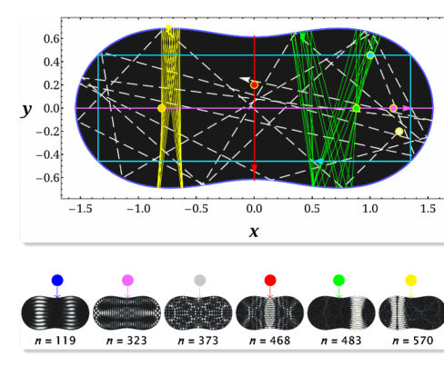
<figcaption class="paper-figure-caption"><b>Fig 1.</b> FIG. 1. Classical trajectories and eigenstate intensities in the peanut-shaped billiard. Top: coloured curves mark selected slowly diverging orbits, while the white dashed curve indi- cates chaotic motion. Bottom: eigenstate intensities ψ(x)2 show enhanced probability density along the corresponding classical structures. The colour coding connects each eigen- state morphology to the corresponding classical structure in the upper panel.</figcaption>
</figure>
<figure class="paper-figure-card">
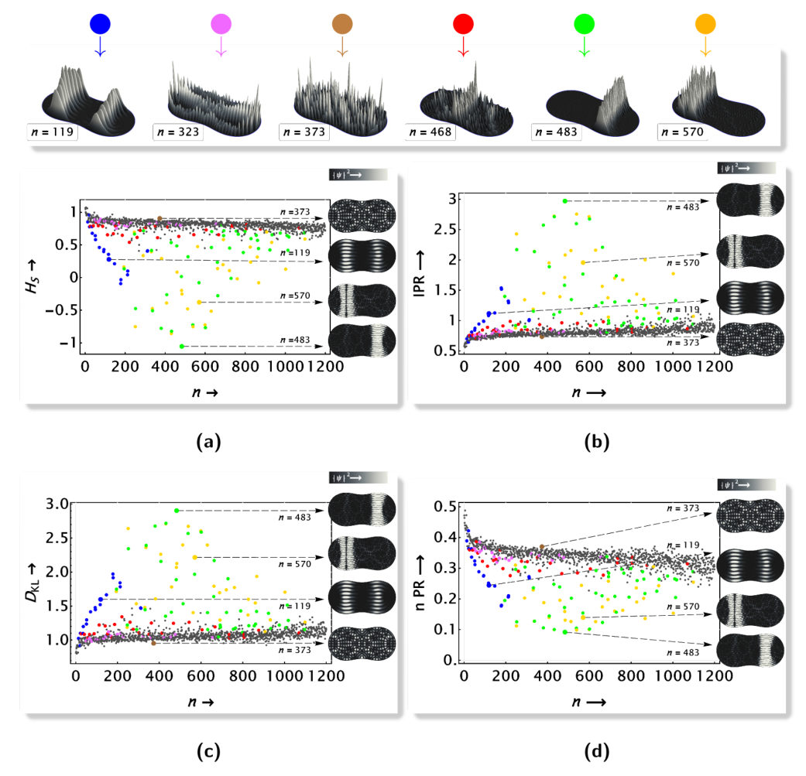
<figcaption class="paper-figure-caption"><b>Fig 2.</b> FIG. 2. Eigenstate morphology and scar diagnostics across the spectrum. Top: representative intensity profiles |ψ|2, with colours matching the highlighted data points. Bottom: spectral variation of (a) Differential Shannon entropy HS, (b) IPR, (c) DKL, and (d) nPR versus eigenstate index n. Insets display a few selected eigenstate probability densities. While these scalar diagnostics reveal anomalous concentrations and deviations from ergodic spatial filling, they collapse each eigenstate to a single number and therefore cannot resolve whether distinct eigenstates share the same spatial morphology.</figcaption>
</figure>
<figure class="paper-figure-card">
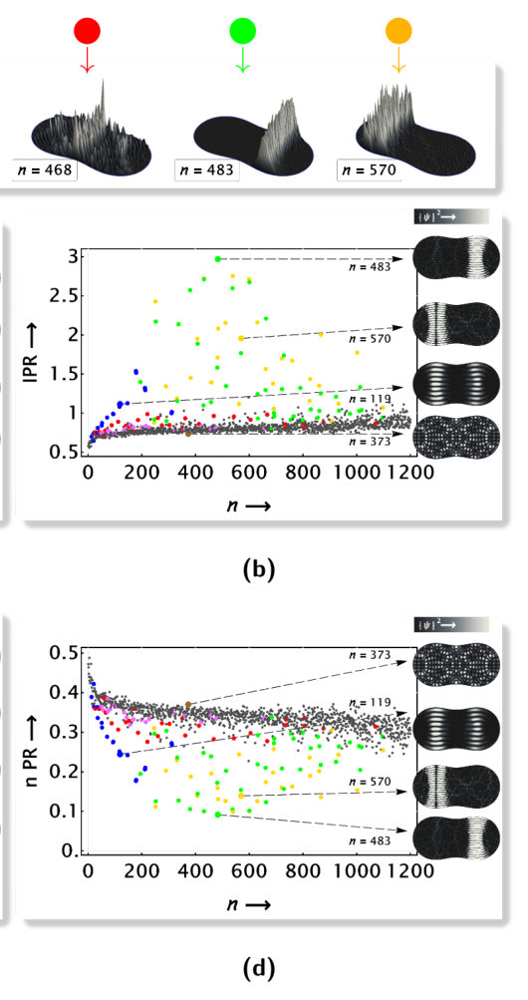
<figcaption class="paper-figure-caption"><b>Fig 3.</b> FIG. 2(c &amp; d) present dimensionless diagnostics that remove this ambiguity by using dimensionless, scale- independent measures. The KL divergence highlights de- viations from the uniform density, so localised or scarred eigenstates appear as large positive outliers. The nPR rescales the participation ratio by the billiard area and therefore measures the fraction of the domain effectively</figcaption>
</figure>
<figure class="paper-figure-card">
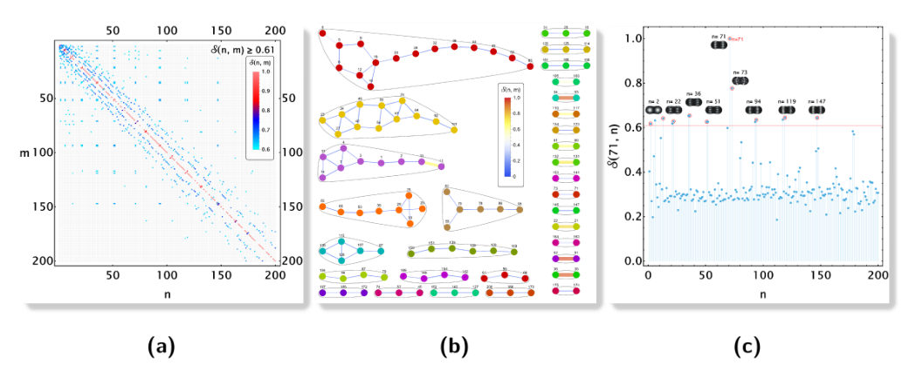
<figcaption class="paper-figure-caption"><b>Fig 4.</b> FIG. 3. Density-overlap similarity between eigenstates. (a) Thresholded matrix S(n, m) ≥0.61, where off-diagonal elements near unity identify distinct eigenstates with nearly identical probability densities. (b) Network of spatially similar eigenstates, with edges drawn for S(n, m) ≥0.67; edge colour and thickness encode S(n, m). The balloon layout is only visual. (c) Eigenstates most similar to the reference state n = 71; the red line marks Sth = 0.61.</figcaption>
</figure>
<figure class="paper-figure-card">
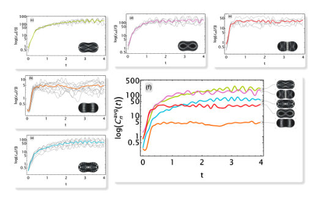
<figcaption class="paper-figure-caption"><b>Fig 5.</b> FIG. 4. Morphology-resolved OTOC dynamics. (a-e) show eigenstate groups Gg with similar density morphology, iden- tified by the overlap S(n, m). Grey curves are individual OTOCs and coloured curves are group averages Cavg g (t). Den- sity thumbnails show representative members from the cor- responding morphology class. (f) compares averaged curves across all classes, demonstrating that recurring eigenstate morphologies yield distinct yet internally consistent OTOC growth and saturation profiles.</figcaption>
</figure>
</div>

<p><strong>Summary.</strong> The paper connects the static spatial structure of wave functions in chaotic quantum systems to their dynamic scrambling behavior. By developing a density overlap metric, the authors group eigenstates by shared morphology rather than just energy or localization. They show that strong morphological recurrence constrains and predicts the growth rate of information scrambling measured via OTOCs.</p>
<p><strong>Why it may be interesting.</strong> This work provides a novel way to connect geometric/structural properties (morphology) directly to non-equilibrium dynamics (scrambling), offering a powerful diagnostic tool for quantum chaos beyond simple ergodicity measures.</p>
<details>
<summary>Detailed structure</summary>
<p><strong>Main problem.</strong> The work investigates whether static structural features, like scarred eigenstates, in chaotic quantum systems provide a quantitative prediction for the dynamics of information scrambling.</p>
<p><strong>Main result.</strong> Strong morphological recurrence among orthogonal eigenstates leads to nearly identical Out-of-Time-Order Correlator (OTOC) growth and saturation, suggesting that eigenstate shape acts as a spatial template constraining scrambling dynamics.</p>
<p><strong>Method.</strong> The authors developed a morphology-resolved diagnostic using scale-normalized density overlap ($S(n, m)$) to group eigenstates by shared probability density profiles, which were then correlated with OTOC time traces.</p>
<p><strong>Model / system.</strong> The study uses a theoretical model of a quantum billiard shaped like a peanut ($\Omega_{	ext{peanut}}$), representing a chaotic system where wave functions exhibit scarring due to unstable classical orbits.</p>
<p><strong>Key observables.</strong> Scale-normalized density overlap ($S(n, m)$), eigenstate-resolved OTOCs, and the resulting curve distance/similarity metrics for comparing time evolution.</p>
<p><strong>Important parameters / regimes.</strong> The degree of morphological recurrence (high $S(n, m)$) is crucial; the relationship between morphology and dynamics is found to be threshold-like.</p>
<p><strong>Assumptions / limitations.</strong> Standard localization diagnostics (entropy, IPR) are insufficient because they only measure concentration and discard spatial architecture. The analysis assumes that OTOCs capture the relevant scrambling dynamics.</p>
<p><strong>Figures summary.</strong> Figures illustrate classical trajectories alongside eigenstate intensities in the billiard; one figure summarizes scalar diagnostics, while others compare density overlap matrices with corresponding OTOC time traces to show correlation.</p>
<p><strong>Paper structure.</strong> The paper first establishes the limitations of standard localization measures. It then introduces and applies the morphology-resolved diagnostic ($S(n, m)$) to group states. Finally, it correlates these morphological classes by comparing their full OTOC time evolution to demonstrate a quantitative link between static shape and dynamic scrambling.</p>
</details>
<details>
<summary>Abstract</summary>
<p>Chaotic quantum systems can retain spatial memory through scarred eigenstates, but whether these static structures control scrambling remains unclear. This work establishes a morphology-resolved connection between scarred eigenstates and eigenstate-resolved OTOCs in a peanut-shaped quantum billiard. Scalar localisation diagnostics, including differential entropy and continuum participation ratios, detect anomalous concentration but discard spatial architecture. A scale-normalised density overlap, in contrast, directly compares probability density profiles, revealing families of orthogonal eigenstates with nearly identical spatial morphology. Comparing the complete OTOC time traces of these orthogonal eigenstates reveals that morphological recurrence has dynamical content: moderate density overlap yields no universal prediction, whereas strongly recurring morphologies exhibit nearly identical OTOC growth and saturation. Thus, scarred structures act as spatial templates for operator growth, not merely static violations of ergodicity. This morphology-resolved framework turns eigenstate shape into a quantitative predictor of scrambling and provides a scale-controlled diagnostic of weak ergodicity breaking in quantum chaos.</p>
</details>
<p><sub><a href="#top">↑ back to top</a></sub></p>

<p><a id="paper-2606.16598"></a></p>
<h3 id="ultracold-atomic-lattice-systems-for-simulating-topological-phases-a-review"><a href="http://arxiv.org/abs/2606.16598v1">Ultracold atomic lattice systems for simulating topological phases: A review</a></h3>
<p><strong>Authors:</strong> Bei-Bei Wang, Xiao-Dong Lin, Jinyi Zhang, Long Zhang<br>
<strong>Type:</strong> both · <strong>Category:</strong> other · <strong>PDF:</strong> <a href="https://arxiv.org/pdf/2606.16598v1">https://arxiv.org/pdf/2606.16598v1</a><br>
<strong>Analysis basis:</strong> full PDF text, analyzed in chunks
<strong>Topic relevance:</strong> 🔥 <code>analog quantum simulation</code> <strong>5/5</strong> · <code>non-equilibrium dynamics</code> <strong>3/5</strong> · <code>Rydberg arrays</code> <strong>1/5</strong> · <code>driven-dissipative phase transition</code> <strong>1/5</strong> · <code>entanglement &amp; information structure</code> <strong>1/5</strong> · <code>exotic spin models in light-matter</code> <strong>1/5</strong> · <code>non-equilibrium universality</code> <strong>1/5</strong></p>
<div class="figure-strip-hint">↔ Scroll figures horizontally</div>
<div class="paper-figures-scroll">
<figure class="paper-figure-card">
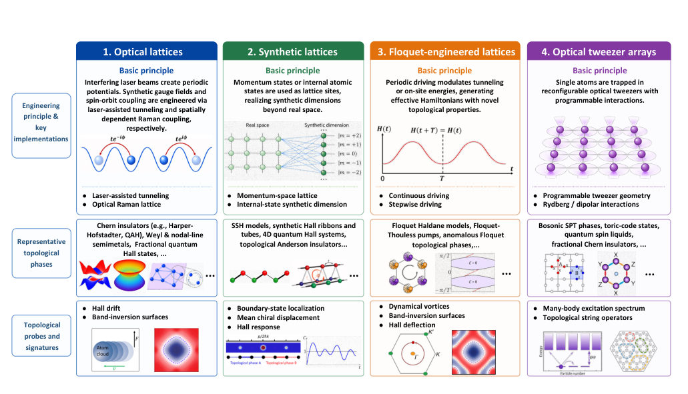
<figcaption class="paper-figure-caption"><b>Fig 1.</b> FIG. 1. Roadmap of the four major ultracold-atom platforms for realizing and probing topological quantum matter. For each platform, we summarize the underlying physical principle, key implementation schemes, representative topological phases, and characteristic topological probes and signatures. The figure highlights the complementary capabilities of optical lattices, synthetic lattices, Floquet-engineered lattices, and optical tweezer arrays for exploring topological phenomena in ultracold atomic systems.</figcaption>
</figure>
<figure class="paper-figure-card">
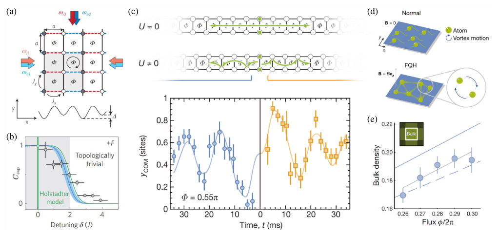
<figcaption class="paper-figure-caption"><b>Fig 2.</b> FIG. 2. (a) Experimental setup for generating a uniform artificial magnetic field via laser-assisted tunneling. A 2D optical lattice with inhibited tunneling along x is combined with two pairs of laser beams (red and blue) that restore tunneling independently on selected red and blue links. This produces a rectified flux Φ = π/2 per plaquette and a magnetic unit cell four times larger than the original lattice cell. (b) Measured Chern number Cexp versus staggered detuning δ. The topological phase transition near δ = 2J is broadened by experimental uncertainties. Panels (a) and (b) are reprinted from Ref. [79]. (c) Interaction-induced chiral dynamics for two particles in a Harper-Hofstadter...</figcaption>
</figure>
<figure class="paper-figure-card">
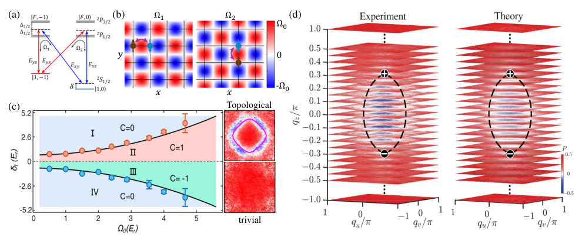
<figcaption class="paper-figure-caption"><b>Fig 3.</b> FIG. 3. (a) Level structure and Raman coupling scheme for realizing 2D QAH model. (b) Real-space antisymmetric structure of the two Raman couplings Ω1 and Ω2. The grid represent the square optical lattice Vlatt(x, y). Panels (a) and (b) are reprinted from Ref. [99]. (c) Left: Topological phase diagram of the lowest band for the QAH model measured by quench dynamics. Here δ f denotes the post-quench value of the two-photon detuning, while Ω0 denotes the Raman coupling strength, with Ω01 = Ω02 = Ω0. Experimental data (blue and red dots) agree with theoretical calculations (solid lines), identifying trivial areas (C = 0) and nontrivial areas (C = 1 and C = −1). Right: Time-evolved spin texture...</figcaption>
</figure>
<figure class="paper-figure-card">
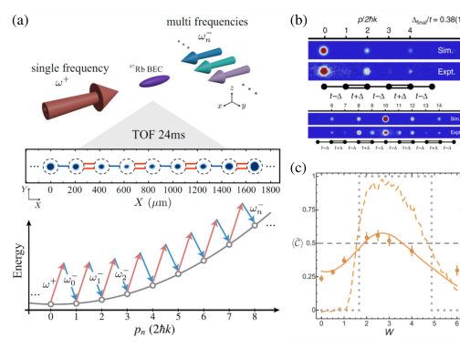
<figcaption class="paper-figure-caption"><b>Fig 4.</b> FIG. 4. (a) Experimental setup of the momentum lattice. A BEC is coupled by Bragg beams with multiple frequency components, cre- ating a synthetic lattice that implements the SSH model. The middle panel shows a typical experimental absorption image of the atomic density distribution in momentum states after TOF expansion, while the bottom panel depicts the dispersion relation and Bragg transi- tion pathways for nearest-neighbor couplings. Panel (a) is reprinted from Ref. [108]. (b) Direct imaging of topological soliton states pre- pared adiabatically. Experimental absorption images (top: edge de- fect; bottom: central defect) show good agreement with theoretical simulations. Panel (b) is...</figcaption>
</figure>
<figure class="paper-figure-card">
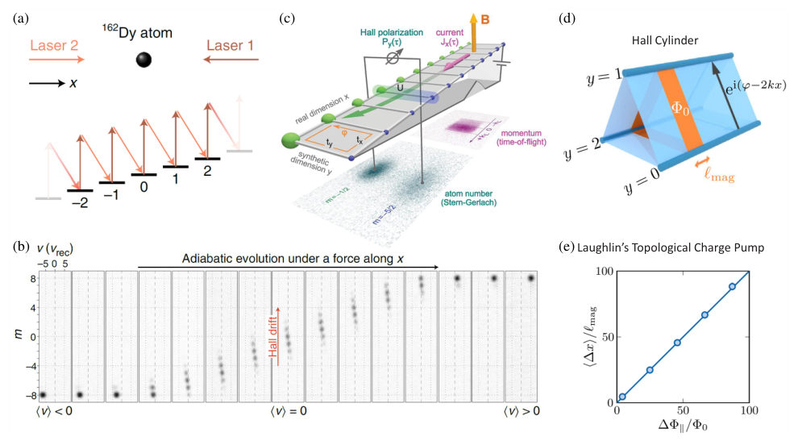
<figcaption class="paper-figure-caption"><b>Fig 5.</b> FIG. 5. (a) Laser configuration coupling magnetic sublevels of 162Dy atoms to realize a synthetic dimension with −J ≤m ≤J. (b) Chiral edge states observed via directional motion: negative velocity on the bottom edge (m = −J), positive velocity on the top edge (m = J), and zero average velocity in the bulk. Single-shot images show the three distinct behaviors. Panels (a) and (b) are reprinted from Ref. [120]. (c) Synthetic ladder implemented with fermionic 173Yb atoms in a 1D optical lattice. Raman coupling between nuclear spins with a position-dependent phase simulates a magnetic field. An applied gradient drives an atomic current Jx; the resulting Hall polarization Py (leg population...</figcaption>
</figure>
</div>

<p><strong>Summary.</strong> This review surveys the rapidly advancing field of simulating topological phases using ultracold atomic lattices. It systematically compares four major experimental platforms—optical lattices, synthetic/Raman lattices, Floquet engineering, and tweezer arrays—highlighting how each allows for precise control over parameters to realize complex models like QAH or SSH systems. The work emphasizes the convergence toward studying strongly correlated, non-equilibrium topological matter.</p>
<p><strong>Why it may be interesting.</strong> This is highly relevant as it details state-of-the-art experimental implementations of fundamental condensed matter theories (like topological insulators) using cold atoms, bridging quantum simulation theory directly to cutting-edge AMO hardware capabilities.</p>
<details>
<summary>Detailed structure</summary>
<p><strong>Main problem.</strong> The review addresses how ultracold atomic lattice systems can be utilized as versatile quantum simulators to study complex topological phases of matter.</p>
<p><strong>Main result.</strong> The paper surveys four major, complementary experimental platforms—optical lattices, synthetic/Raman lattices, Floquet engineering, and optical tweezer arrays—demonstrating their collective power to realize and probe diverse topological models.</p>
<p><strong>Method.</strong> The review synthesizes recent experimental breakthroughs by detailing the specific Hamiltonian realizations, advanced measurement techniques (like quantum gas microscopy), and theoretical frameworks applied across different atomic platforms.</p>
<p><strong>Model / system.</strong> The systems include optical lattices, which are engineered using various laser schemes (e.g., Raman coupling) to simulate models like the Harper-Hofstadter model or the 2D Quantum Anomalous Hall (QAH) model. The flexibility allows for simulating both single-particle band structures and strongly correlated phases.</p>
<p><strong>Key observables.</strong> Key observables include topological invariants such as the Chern number ($C$), fractional Hall conductance ($\sigma_H$), chiral center-of-mass displacement, and signatures of exotic states like topological soliton formation.</p>
<p><strong>Important parameters / regimes.</strong> Tunable parameters include lattice geometry, interaction strength ($U$), synthetic magnetic flux ($\Phi$), and coupling strengths ($\delta J$ vs $J$).</p>
<p><strong>Assumptions / limitations.</strong> Approximations mentioned include the Rotating-Wave Approximation (RWA) for time-dependent couplings, and the general assumption that these engineered systems can mimic complex solid-state physics.</p>
<p><strong>Figures summary.</strong> Figures provide roadmaps summarizing the four platforms; specific examples show laser-assisted tunneling setups measuring Chern numbers, Raman lattice schemes realizing QAH models with phase diagrams, and momentum lattices implementing SSH models with soliton imaging.</p>
<p><strong>Paper structure.</strong> The review systematically surveys recent experimental progress by dedicating sections to the four major platform classes: optical lattices (including specialized techniques), synthetic lattices in momentum/internal-state space, Floquet engineering, and optical tweezer arrays. It concludes with future outlooks on strongly correlated and non-equilibrium physics.</p>
</details>
<details>
<summary>Abstract</summary>
<p>Owing to rapid recent progress, ultracold atomic lattice systems for simulating topological phases are now at a pivotal stage, evolving from established paradigms into increasingly versatile and programmable quantum simulators. In this review, we survey recent experimental advances across four major classes of platforms: optical lattices, including optical lattices with laser-assisted tunneling and optical Raman lattices; synthetic lattices in momentum or internal-state space; Floquet-engineered lattices; and optical tweezer arrays, all of which offer distinct capabilities for realizing and probing topological matter. For each class, we highlight representative experimental breakthroughs, the topological models that have been realized, and the advanced detection and characterization techniques employed, emphasizing how these complementary approaches collectively expand the frontier of quantum simulation. We also discuss emerging directions in strongly correlated and nonequilibrium topological phases, and conclude with an outlook on future prospects.</p>
</details>
<p><sub><a href="#top">↑ back to top</a></sub></p>

<p><a id="paper-2606.15124"></a></p>
<h3 id="programmable-gauge-field-textures-with-ultracold-atoms-in-momentum-space"><a href="http://arxiv.org/abs/2606.15124v1">Programmable Gauge-Field Textures with Ultracold Atoms in Momentum Space</a></h3>
<p><strong>Authors:</strong> Hongru Wang, Hang Li, Yichen Pan, Yuyan Luo, Bryce Gadway, Tao Chen, Bo Yan<br>
<strong>Type:</strong> experiment · <strong>Category:</strong> other · <strong>PDF:</strong> <a href="https://arxiv.org/pdf/2606.15124v1">https://arxiv.org/pdf/2606.15124v1</a><br>
<strong>Analysis basis:</strong> full PDF text, analyzed in chunks
<strong>Topic relevance:</strong> 🔥 <code>analog quantum simulation</code> <strong>5/5</strong> · <code>non-equilibrium dynamics</code> <strong>3/5</strong> · <code>driven-dissipative phase transition</code> <strong>1/5</strong> · <code>non-equilibrium universality</code> <strong>1/5</strong></p>
<div class="figure-strip-hint">↔ Scroll figures horizontally</div>
<div class="paper-figures-scroll">
<figure class="paper-figure-card">
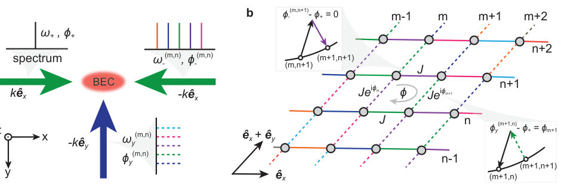
<figcaption class="paper-figure-caption"><b>Fig 1.</b> FIG. 1. Schematic of building 2D MSLs with tunable magnetic flux. (a) Three Bragg laser beams (the wavevector k = 2π/λ with λ ≈794.7 nm) interact with a BEC to form 2D lattice geometries in momentum space. The two counter- propagating beams along the x-direction (ω+ and ω−) trigger the tunnelings between discrete momentum states along ˆex with an interval of 2ℏk, while the perpendicular beam ωy, in combination with ω+, leads to hopping between states with a momentum difference of ℏk(ˆex + ˆey). The tunneling phases are introduced by programming each individual phase for different frequency components in ω−and ωy beams, respectively. (b) Illustration of the Haper-Hofstadter lattice. Bonds...</figcaption>
</figure>
<figure class="paper-figure-card">
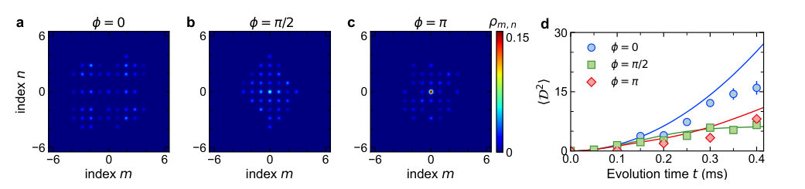
<figcaption class="paper-figure-caption"><b>Fig 2.</b> FIG. 2. Bulk dynamics for an injection in 2D Harper-Hofstadter lattices. (a-c) Measured population distributions ρm,n at t = 0.3 ms for (a) ϕ = 0, (b) ϕ = π/2 and (c) ϕ = π. The wavepacket spreading shows nearly symmetric ballistic behavior in the absence of flux, while the spreading speed gets suppressed under finite ϕ-flux. (d) Time evolution of the bulk expansion characterized by the mean-square displacement ⟨D2⟩for different gauge fluxes ϕ. For zero flux, the wavepacket exhibits ballistic expansion with ⟨D2⟩∝t2, whereas a slower expansion is observed for ϕ = π/2 and ϕ = π. Here the tunneling amplitudes are set as J/h = 0.95(5) kHz for a 15 × 15 square lattice. All solid lines indicate...</figcaption>
</figure>
<figure class="paper-figure-card">
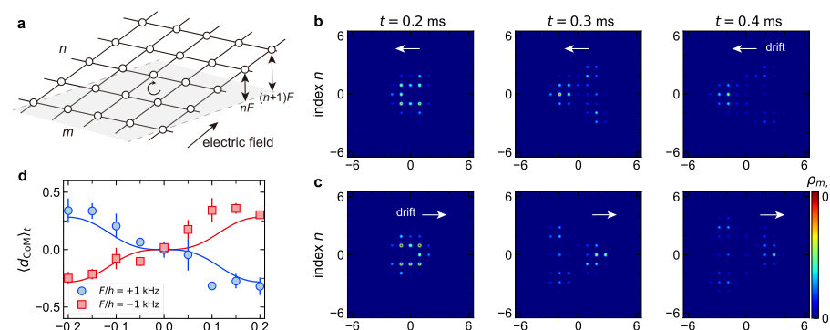
<figcaption class="paper-figure-caption"><b>Fig 3.</b> FIG. 3. Hall response under programmable transverse electric fields. (a) Schematic of simulating the Hall effect in the Harper-Hofstadter lattice. A potential gradient is applied along the ˆex + ˆey direction (sites indexed by n) to introduce a synthetic electric field F. (b,c) Measured momentum-space dynamics of a wavepacket injected at the lattice center for evolution times t = 0.2, 0.3 and 0.4 ms with the effective electric fields F/h = +1 kHz and F/h = −1 kHz, respectively, showing opposite transverse drift directions of the wavepacket. Here ϕ = π/5 is used. (d) Time-averaged center-of-mass displacement ⟨dCoM⟩t versus the magnetic flux ϕ for the two opposite electric-field polarities,...</figcaption>
</figure>
<figure class="paper-figure-card">
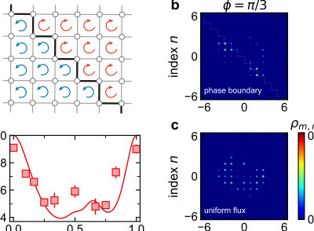
<figcaption class="paper-figure-caption"><b>Fig 4.</b> FIG. 4. Boundary-guided dynamics at an engineered gauge-field interface. (a) Schematic of creating a syn- thetic gauge-field boundary (flux interface, bold black con- nections) in the 2D MSL, where the synthetic magnetic flux takes opposite signs (+ϕ and −ϕ) on the two sides of the diagonal interface. (b) Measured wavepacket distributions at t = 0.35 ms for an injection at the interface center for ϕ = π/3. (c) Measured wavepacket distributions for uniform ϕ = π/3 without an interface as a comparison to the result in (b). (d) Anisotropy parameter η characterizing wavepacket elongation along the interface as a function of the flux ϕ.</figcaption>
</figure>
</div>

<p><strong>Summary.</strong> This paper reports on the experimental realization of programmable 2D momentum-state lattices using ultracold atoms to engineer complex synthetic gauge fields. By achieving local control over magnetic fluxes, the researchers demonstrated tunable quantum transport phenomena, including Hall drift and anisotropic wavepacket guiding along designed topological interfaces. This establishes a versatile platform for studying exotic quantum matter beyond natural physical constraints.</p>
<p><strong>Why it may be interesting.</strong> This work provides a powerful experimental realization of designer gauge structures in quantum matter, moving beyond simple uniform background fluxes. It directly tests fundamental concepts of topological transport (like the Quantum Hall effect) in an ultracold atom setting, which is highly relevant for AMO physicists studying synthetic dimensions and engineered Hamiltonians.</p>
<details>
<summary>Detailed structure</summary>
<p><strong>Main problem.</strong> The research aims to advance cold-atom gauge-field engineering from systems limited to uniform magnetic fluxes toward realizing highly programmable, spatially structured (designer) gauge textures in two dimensions.</p>
<p><strong>Main result.</strong> The authors successfully implemented 2D momentum-state lattices with local control over the Peierls phase pattern, enabling the study of transport across engineered topological interfaces and observing Hall-type transverse drift.</p>
<p><strong>Method.</strong> They use three Bragg laser beams to create a 2D lattice in momentum space, allowing for precise programming of synthetic gauge fields (fluxes) on individual plaquettes.</p>
<p><strong>Model / system.</strong> The platform utilizes ultracold atoms (e.g., Rb BEC) trapped in Momentum-State Lattices (MSLs). The physics is governed by the Harper-Hofstadter Hamiltonian, which can be modified by adding site-dependent energy gradients to simulate electric fields.</p>
<p><strong>Key observables.</strong> Mean-square displacement ($\langle D^2 
angle$) for bulk dynamics, transverse Center-of-Mass (CoM) drift ($\langle d_{	ext{CoM}} 
angle_t$), and anisotropic expansion along flux domain walls.</p>
<p><strong>Important parameters / regimes.</strong> The synthetic magnetic flux ($\phi$) in a plaquette is the key tunable parameter. The system also allows for tuning of electric fields ($F$).</p>
<p><strong>Assumptions / limitations.</strong> A limitation noted is that phase control is constrained by using $m+n$-independent laser components, meaning one component affects multiple tunneling links simultaneously.</p>
<p><strong>Figures summary.</strong> Figures illustrate the schematic creation of the 2D MSL using Bragg beams and show time evolution plots demonstrating flux-suppressed transport dynamics and wavepacket guiding along engineered domain walls.</p>
<p><strong>Paper structure.</strong> The paper progresses by first establishing the programmable nature of the 2D lattice, then demonstrating bulk dynamics (crossover from ballistic to localized), followed by applying synthetic electric fields to observe Hall effects, and finally investigating interface physics using flux domain walls.</p>
</details>
<details>
<summary>Abstract</summary>
<p>Synthetic gauge fields with ultracold atoms offer a route to quantum matter in which electromagnetic environments can be designed rather than merely imposed. While the Harper-Hofstadter model has been realized in several cold-atom systems, existing implementations are largely limited to spatially uniform magnetic fluxes. Here we experimentally realize a highly programmable two-dimensional momentum-state lattice of ultracold atoms with local control over the Peierls phase pattern, enabling direct implementation of Harper-Hofstadter Hamiltonians with tunable and spatially structured synthetic gauge fields. We observe a crossover from ballistic to strongly flux-modified bulk dynamics with suppressed transport. By introducing a synthetic electric field through site-dependent energy gradients, we further demonstrate Hall-type transverse drift arising from the interplay between electric and magnetic fields. In addition, we engineer a synthetic flux domain wall separating regions with opposite magnetic fluxes and observe anisotropic propagation guided along the interface. These results move cold-atom gauge-field engineering from uniform magnetic backgrounds toward designer gauge textures, providing an experimental setting for transport across programmable topological interfaces.</p>
</details>
<p><sub><a href="#top">↑ back to top</a></sub></p>

<p><a id="paper-2606.15664"></a></p>
<h3 id="synthesizing-arbitrary-non-hermitian-hamiltonian-with-stochastic-floquet-engineering"><a href="http://arxiv.org/abs/2606.15664v1">Synthesizing Arbitrary Non-Hermitian Hamiltonian with Stochastic Floquet Engineering</a></h3>
<p><strong>Authors:</strong> Lingzhen Guo, Hui Jing<br>
<strong>Type:</strong> theory · <strong>Category:</strong> other · <strong>PDF:</strong> <a href="https://arxiv.org/pdf/2606.15664v1">https://arxiv.org/pdf/2606.15664v1</a><br>
<strong>Analysis basis:</strong> full PDF text, analyzed in chunks
<strong>Topic relevance:</strong> 🔥 <code>methods for driven-dissipative</code> <strong>4/5</strong> · 🔥 <code>non-equilibrium dynamics</code> <strong>4/5</strong> · <code>analog quantum simulation</code> <strong>3/5</strong> · <code>correlated / nonlocal dissipation</code> <strong>3/5</strong> · <code>correlated cavity matter</code> <strong>3/5</strong> · <code>driven-dissipative phase transition</code> <strong>3/5</strong> · <code>Keldysh / 2PI / non-Gaussian methods</code> <strong>2/5</strong> · <code>Tavis-Cummings &amp; cavity-many-emitter</code> <strong>2/5</strong> · <code>non-equilibrium universality</code> <strong>2/5</strong> · <code>Kondo &amp; dissipative impurity</code> <strong>1/5</strong> · <code>entanglement &amp; information structure</code> <strong>1/5</strong> · <code>measurement-induced transitions</code> <strong>1/5</strong> · <code>quantum measurements</code> <strong>1/5</strong></p>
<div class="figure-strip-hint">↔ Scroll figures horizontally</div>
<div class="paper-figures-scroll">
<figure class="paper-figure-card">
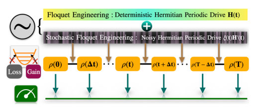
<figcaption class="paper-figure-caption"><b>Fig 1.</b> FIG. 1. Sketch of Stochastic Floquet Engineering (SFE). The conventional Floquet engineering uses the deter- ministic Hermitian time-periodic drive H(t) = H(t+T), while the SFE adds another stochastic Hermitian time-periodic drive H′(t) = H′(t + T) with noisy amplitude ξ(t). By moni- toring quantum jumps, any target non-unitary time evolution of the density operator ρ(T) = e−iHT T ρ(0)eiH† T T generated by an arbitrary non-Hermitian(NH) Hamiltonian HT ̸= H† T can be realized with no need for loss and gain in prior.</figcaption>
</figure>
<figure class="paper-figure-card">
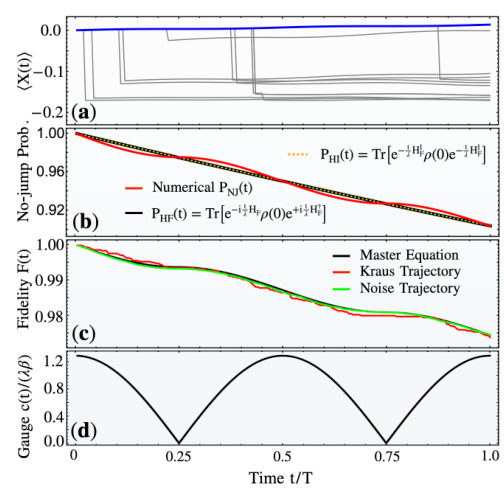
<figcaption class="paper-figure-caption"><b>Fig 2.</b> FIG. 2. Synthesizing NH cavity Hamiltonian via SFE. (a) Monitoring quantum jumps of Kraus trajectories gener- ated from Eq. (11) with the cavity quadrature ⟨X(t)⟩, where the trajectories with no quantum jumps are marked in blue. (b) Time-dependent no-jump probability given by numerical calculation (red), the Floquet Hamiltonian HF (blue curve), and the imaginary part of the Floquet Hamiltonian (yellow curve) with HI F = 1 2i(H† F −HF ). (c) Time-evolved fidelity F(t) of density matrix ρ(t) with respect to the initial state ρ(0) = |0⟩⟨0| given by ensemble averaging Kraus trajectories (red), noisy trajectories (green), cf. Eq. (2), and the quantum master equation (black), cf. Eq. (3). (d)...</figcaption>
</figure>
<figure class="paper-figure-card">
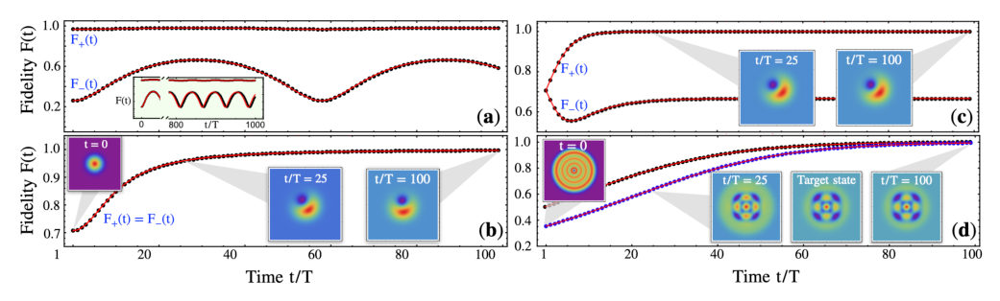
<figcaption class="paper-figure-caption"><b>Fig 3.</b> FIG. 3. Stroboscopic dynamcs of NH Hamiltonian.(a)-(c): Stroboscopic time evolution of the fidelity F±(t) = p</figcaption>
</figure>
</div>

<p><strong>Summary.</strong> The paper introduces Stochastic Floquet Engineering (SFE), a novel technique to synthesize arbitrary non-Hermitian Hamiltonians in periodically driven quantum systems. By incorporating noise into the driving field, SFE bypasses the need for traditional loss/gain mechanisms while achieving control over complex non-unitary dynamics. This is highly relevant for controlling open quantum systems in fields like cavity QED and quantum optics.</p>
<p><strong>Why it may be interesting.</strong> This work provides a powerful, general theoretical tool for controlling open quantum systems and realizing non-unitary dynamics—a regime often difficult to access experimentally or theoretically without invoking explicit dissipation channels.</p>
<details>
<summary>Detailed structure</summary>
<p><strong>Main problem.</strong> The primary goal is to synthesize an arbitrary non-Hermitian (NH) target Hamiltonian ($H_T$) using a stochastic Floquet engineering scheme.</p>
<p><strong>Main result.</strong> The method successfully engineers NH dynamics by utilizing noise ($\xi(t)$) as a quantum resource, allowing for the synthesis of complex non-unitary gates without requiring explicit loss or gain terms.</p>
<p><strong>Method.</strong> Stochastic Floquet Engineering (SFE) is employed, which modifies the standard deterministic driving field by adding a term proportional to $\sqrt{\eta\xi(t)}H'(t)$ to the Hamiltonian. The dynamics are analyzed via master equations and stroboscopic evolution approximations.</p>
<p><strong>Model / system.</strong> The theory is applied to bosonic systems modeled by cavity Hamiltonians, allowing for the engineering of NH couplings between Fock states in a specific basis $\{|n
angle, |m
angle\}$.</p>
<p><strong>Key observables.</strong> Fidelity $F(t)$, no-jump probability $P_{NJ}(t)$, and the time evolution of the density matrix $
ho(t)$.</p>
<p><strong>Important parameters / regimes.</strong> The noise strength ($\eta$), the driving period ($T$), and the coupling constants defining the target Hamiltonian components.</p>
<p><strong>Assumptions / limitations.</strong> The method relies on approximating the time evolution operator to second order in $\Delta t$ and assumes that monitoring the null outcome successfully suppresses quantum jumps to realize the target evolution.</p>
<p><strong>Figures summary.</strong> Figures illustrate the general framework comparing deterministic vs. stochastic driving, show diagnostics like quadrature observable tracking and fidelity evolution compared against theoretical predictions from the NH Hamiltonian.</p>
<p><strong>Paper structure.</strong> The paper introduces SFE theory by deriving the effective non-Hermitian Floquet Hamiltonian ($\mathcal{H}_F$) from a master equation incorporating noise. It then applies this framework to engineer specific NH Hamiltonians in bosonic cavity systems using Noncommutative Fourier Transformation (NcFT) techniques.</p>
</details>
<details>
<summary>Abstract</summary>
<p>The conventional Floquet engineering scheme synthesizes a given target Hamiltonian with a deterministic temporal periodic driving field. In this work, we introduce the stochastic Floquet engineering scheme that can synthesize an arbitrary non-Hermitian target Hamiltonian using a time-periodic driving field with noisy amplitude. Our method is rooted in the Hermitian dynamics taking noise as a valuable quantum resource with no need for loss or gain in prior. We apply our method to engineer a cavity Hamiltonian with dissipative coupling between Fock states, and to prepare a given quantum state from a generally arbitrary quantum state. The stochastic Floqut engineering also provides a way to generate non-unitary quantum gates, which take advantage in certain tasks compared to unitary quantum computing, without the need for ancillae or state-dependent updating.</p>
</details>
<p><sub><a href="#top">↑ back to top</a></sub></p>

<p><a id="paper-2606.16055"></a></p>
<h3 id="readout-induced-leakage-in-superconducting-circuits-with-nonlinear-couplings"><a href="http://arxiv.org/abs/2606.16055v1">Readout-Induced Leakage in Superconducting Circuits with Nonlinear Couplings</a></h3>
<p><strong>Authors:</strong> Sumeru Hazra, Wei Dai, Daniel K. Weiss, Pranav D. Parakh, Luigi Frunzio, Michel H. Devoret<br>
<strong>Type:</strong> both · <strong>Category:</strong> quantum information and computing · <strong>PDF:</strong> <a href="https://arxiv.org/pdf/2606.16055v1">https://arxiv.org/pdf/2606.16055v1</a><br>
<strong>Analysis basis:</strong> full PDF text, analyzed in chunks
<strong>Topic relevance:</strong> 🔥 <code>QC/QI experiment</code> <strong>4/5</strong> · 🔥 <code>methods for driven-dissipative</code> <strong>4/5</strong> · <code>correlated / nonlocal dissipation</code> <strong>3/5</strong> · <code>correlated cavity matter</code> <strong>3/5</strong> · <code>driven-dissipative phase transition</code> <strong>3/5</strong> · <code>non-equilibrium dynamics</code> <strong>3/5</strong> · <code>Tavis-Cummings &amp; cavity-many-emitter</code> <strong>2/5</strong> · <code>non-equilibrium universality</code> <strong>2/5</strong> · <code>Keldysh / 2PI / non-Gaussian methods</code> <strong>1/5</strong> · <code>measurement-induced transitions</code> <strong>1/5</strong> · <code>quantum measurements</code> <strong>1/5</strong> · <code>quantum optics experiment</code> <strong>1/5</strong></p>
<div class="figure-strip-hint">↔ Scroll figures horizontally</div>
<div class="paper-figures-scroll">
<figure class="paper-figure-card">
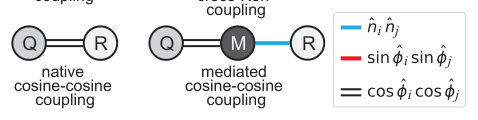
<figcaption class="paper-figure-caption"><b>Fig 1.</b> Figure 1. Drive-induced leakage in superconducting cir- cuits. (a) Dressed energy-level diagram of a multi-mode sys- tem. A drive-induced unwanted state transition (DUST), e.g. ∣e⟩→∣k⟩, is activated when a multi-quanta resonance condi- tion is met. (b) Floquet branch analysis of the driven system at a given drive frequency, showing a branch swap between the dressed ∣e⟩and ∣k⟩levels when the drive power (param- eterized by the induced ac-Stark shift) meets a multi-quanta resonance condition. (c) Schematic of different qubit (Q)- readout (R) coupling mechanisms ˆOi ˆOj, {i, j} ∈{q, m, r}: lin- ear coupling via ˆnqˆnr interaction (blue line); balanced cross- Kerr coupling via a combination of...</figcaption>
</figure>
<figure class="paper-figure-card">
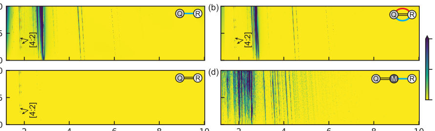
<figcaption class="paper-figure-caption"><b>Fig 2.</b> Figure 2. Multiphoton resonance landscape visualized by the sum of displaced state overlaps Θ(0t) + Θ(1t), calculated from both qubit states. The displaced-overlap is plotted against the readout drive frequency (normalized by qubit frequency) ωd/ωq and readout power for different circuit realizations: (a) transmon linearly coupled to the drive [25], (b) balanced cross-Kerr interaction [5] (EJ cos ˆϕq cos ˆϕr+EJ sin ˆϕq sin ˆϕr−Jˆnqˆnr), (c) ideal cosine-cosine cos ˆϕq cos ˆϕr coupling, and (d) effective nonlinear coupling mediated by an auxiliary mode (this work, see also Ref. [3]). Although the ideal cos ˆϕq cos ˆϕr interaction suppresses most multiphoton resonances, in mediated cos ˆϕq...</figcaption>
</figure>
<figure class="paper-figure-card">
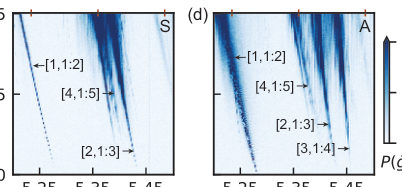
<figcaption class="paper-figure-caption"><b>Fig 3.</b> Figure 3. Impact of auxiliary modes and residual asymmetry. (a) Simplified lumped element model of the dimon-readout system and schematic comparison between the symmetric and asymmetric drives through ports PS and PA, respec- tively. (b) Pulse sequence for characterizing drive-induced unwanted state transitions. After preparing the qubit in ∣g⟩, a 1µs stimulation tone of variable frequency and power is ap- plied, followed by a readout to measure the escaped popu- lation, P(¯g∣g). (c-d) Plotted P(¯g∣g) as a function of drive frequency and drive power under symmetric and asymmetric drives on the device. (c) Auxiliary modes introduce multi- ple joint-excitation channels in the driven circuit...</figcaption>
</figure>
<figure class="paper-figure-card">
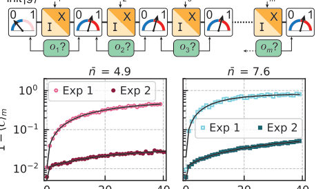
<figcaption class="paper-figure-caption"><b>Fig 4.</b> Figure 4. Readout-induced leakage in two experiments with different readout frequencies. (a) Simulated hybridization pa- rameter Θ, from the qubit ground (blue) and excited (red) states, plotted against the ratio ωr/ωq (x-axis) and the read- out drive power (y-axis). In Exp 1 (vertical dashed line), a multiphoton resonance [2, 3 ∶3] is activated from the ex- cited state at the readout frequency; in Exp 2 (vertical solid line), this resonance is avoided by detuning the readout fre- quency. (b) Pulse sequence for benchmarking the readout- induced leakage. The readout operations are intertwined with a stochastic sequence of qubit operations consisting of identity (I) and bit-flip (X)...</figcaption>
</figure>
</div>

<p><strong>Summary.</strong> This research investigates how drive-induced leakage limits readout performance in superconducting qubits. By comparing linear versus nonlinear coupling schemes, the authors demonstrate that while nonlinearity is promising, its benefit critically depends on precise device design to avoid parasitic resonance pathways. The work establishes that frequency dependence is paramount, requiring comprehensive spectral characterization for reliable quantum computing operation.</p>
<p><strong>Why it may be interesting.</strong> This work provides crucial experimental and theoretical benchmarks for mitigating decoherence sources in superconducting quantum processors by mapping out the complex parameter space where unwanted coupling channels become active.</p>
<details>
<summary>Detailed structure</summary>
<p><strong>Main problem.</strong> Drive-induced unwanted transitions (leakage) limit the readout power and fidelity of superconducting qubits, posing a significant challenge for quantum error correction.</p>
<p><strong>Main result.</strong> Leakage is highly sensitive to the choice of readout frequency, demonstrating that nonlinear couplings only provide benefits through careful, informed device engineering rather than inherently suppressing all leakage pathways.</p>
<p><strong>Method.</strong> The study employs both theoretical Floquet steady-state simulations and detailed experimental measurements (e.g., correlation decay analysis) to characterize multi-photon resonance landscapes.</p>
<p><strong>Model / system.</strong> The system involves superconducting qubits coupled to readout resonators, analyzed using various nonlinear coupling schemes like native cosine-cosine or mediated couplings involving auxiliary modes.</p>
<p><strong>Key observables.</strong> Readout fidelity ($F_{ge}$), leakage probability ($\mathcal{L}_\uparrow$), seepage rate ($\mathcal{L}_\downarrow$), and the multi-photon resonance landscape ($\Theta$ vs. frequency/power).</p>
<p><strong>Important parameters / regimes.</strong> Readout drive frequency ($\omega_d/\omega_q$) and readout power (related to steady-state photon number $ar{n}_r$).</p>
<p><strong>Assumptions / limitations.</strong> The analysis often relies on approximations, such as assuming an incoherent leakage model or neglecting quantum fluctuations of the resonator in certain theoretical derivations.</p>
<p><strong>Figures summary.</strong> Figures illustrate resonance landscapes showing how different couplings affect multiphoton resonances; experimental data show correlation decay curves and measured fidelity values across varying readout parameters.</p>
<p><strong>Paper structure.</strong> The paper systematically compares various coupling Hamiltonians (linear vs. nonlinear), analyzes the resulting multi-photon resonance spectra via Floquet theory, and validates these findings with detailed measurements of readout fidelity and leakage rates as a function of drive frequency.</p>
</details>
<details>
<summary>Abstract</summary>
<p>In superconducting circuits, drive-induced unwanted transitions limit the readout power, thereby constraining readout speed and fidelity. When such transitions excite the qubit into leakage states, they produce correlated errors that are particularly harmful for quantum error correction. Native nonlinear qubit-readout resonator coupling is a promising alternative to conventional linear hybridization because it provides intrinsic Purcell protection and stricter selection rules for multiphoton processes. In realistic devices, however, we show that such a coupling alone neither eliminates nor necessarily suppresses drive-induced transitions. Instead, if not appropriately engineered, these couplings often worsen the situation by introducing additional parasitic processes. Moreover, the rates of these unwanted transitions remain sensitive to the choice of readout frequency, regardless of the coupling mechanism. We demonstrate that readout-induced leakage can thus vary by orders of magnitude even when readout frequencies differ by less than ~7%. Our results establish that the benefits of native nonlinear couplings are realized only through informed device design, including the spectral placement of relevant auxiliary modes and elimination of parasitic ones.</p>
</details>
<p><sub><a href="#top">↑ back to top</a></sub></p>

<p><a id="paper-2606.15292"></a></p>
<h3 id="light-induced-nonadiabatic-dissipative-quantum-dynamics-of-the-na2-molecule"><a href="http://arxiv.org/abs/2606.15292v1">Light-induced nonadiabatic dissipative quantum dynamics of the Na2 molecule</a></h3>
<p><strong>Authors:</strong> Patrick Barron, Krisztián Szabó, Gábor J. Halász, Kálmán Varga, Ágnes Vibók<br>
<strong>Type:</strong> theory · <strong>Category:</strong> other · <strong>PDF:</strong> <a href="https://arxiv.org/pdf/2606.15292v1">https://arxiv.org/pdf/2606.15292v1</a><br>
<strong>Analysis basis:</strong> full PDF text, analyzed in chunks
<strong>Topic relevance:</strong> 🔥 <code>methods for driven-dissipative</code> <strong>4/5</strong> · <code>analog quantum simulation</code> <strong>3/5</strong> · <code>correlated / nonlocal dissipation</code> <strong>3/5</strong> · <code>correlated cavity matter</code> <strong>3/5</strong> · <code>driven-dissipative phase transition</code> <strong>3/5</strong> · <code>non-equilibrium dynamics</code> <strong>3/5</strong> · <code>Keldysh / 2PI / non-Gaussian methods</code> <strong>2/5</strong> · <code>Tavis-Cummings &amp; cavity-many-emitter</code> <strong>2/5</strong> · <code>non-equilibrium universality</code> <strong>2/5</strong> · <code>measurement-induced transitions</code> <strong>1/5</strong> · <code>quantum measurements</code> <strong>1/5</strong></p>
<div class="figure-strip-hint">↔ Scroll figures horizontally</div>
<div class="paper-figures-scroll">
<figure class="paper-figure-card">
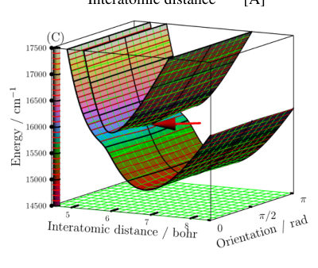
<figcaption class="paper-figure-caption"><b>Fig 1.</b> Figure 1: (A) Diabatic potential energy curves of the first excited manifold of the Na2 molecule in a cavity. (B) Transition dipole moment (red line) function between the X1Σ+ g and A1Σ+ u electronic states. (C) Dressed states potential energy surfaces of the Na2 molecule representing the quantum light-induced conical intersection (LICI). The red arrow marks the location of the LICI.</figcaption>
</figure>
<figure class="paper-figure-card">

<figcaption class="paper-figure-caption"><b>Fig 2.</b> Figure 2: Population dynamics of the excited molecule and mean photon number in the 1D framework in a lossy cavity ( g = 8 × 10−5a.u., γc = 4 × 10−4a.u. and ωcav = 1.968eV ). The dynamics is initiated from the |e, 0⟩state (panels A and B) and from the |g, 0⟩state pumping the population using laser pulse as I = 4.74 × 1011w/cm2, T = 30 fs and ωlaser = 2eV (panels C and D). Three different methods are used. Lindblad ME results(line with circle), Stochastic SE curve (line with cross), and non-Hermitian TDSE curve (line with dots).</figcaption>
</figure>
<figure class="paper-figure-card">

<figcaption class="paper-figure-caption"><b>Fig 3.</b> Figure 3: Population dynamics of the excited molecule and mean photon number in the 2D framework in a lossy cavity ( g = 8 × 10−5a.u., γc = 4 × 10−4a.u. and ωcav = 1.968eV ). The dynamics is initiated from the |e, 0⟩state (panels A and B) and from the |g, 0⟩state pumping the population to the excited polaritonic manifold using a laser pulse as I = 4.74×1011w/cm2, T = 30 fs and ωlaser = 2eV (panels C and D). Three different methods are used. Lindblad ME results(line with circle), Stochastic SE curve (line with cross) and non-Hermitian TDSE curve (line with dots).</figcaption>
</figure>
<figure class="paper-figure-card">

<figcaption class="paper-figure-caption"><b>Fig 4.</b> Figure 4: Population dynamics of the excited molecule and mean photon number in the 2D framework in a lossy cavity ( g = 8 × 10−5a.u., γc = 4 × 10−4a.u.and ωcav = 1.968eV ). The dynamics is initiated from the |e, 1⟩state (panels A and B) and from the |g, 2⟩(panels C and D). Two different methods are used. Stochastic SE curve (line with cross) and non- Hermitian TDSE curve (line with dots).</figcaption>
</figure>
<figure class="paper-figure-card">

<figcaption class="paper-figure-caption"><b>Fig 5.</b> Figure 5: Population dynamics of the excited molecule and mean photon number in the 2D framework in lossy cavity ( g = 8 × 10−5a.u., γc = 4 × 10−4a.u. and ωcav = 1.968eV ). The dynamics is initiated from the |g, 0⟩state pumping the population to the excited polaritonic manifold using laser pulses as (I = 4.74×1011w/cm2 and ωlaser = 2eV ) with length T = 15 fs (panels A and B), T = 30 fs (panels C and D) and T = 45 fs of (panels E and F). Two different methods are used. Stochastic SE curve (line with cross) and non-Hermitian TDSE curve (line with dots).</figcaption>
</figure>
</div>

<p><strong>Summary.</strong> The paper investigates how light drives a diatomic molecule coupled to a lossy optical cavity, focusing on the role of dissipation and molecular rotation. By comparing three major quantum simulation techniques (Lindblad ME, SE, TDSE), the authors establish the stochastic Schrödinger equation as the most reliable method for open dynamics. The key finding is that including rotational motion reveals nonadiabatic coupling pathways (LICIs) essential for accurate predictions.</p>
<p><strong>Why it may be interesting.</strong> This work is highly relevant as it tackles the complex intersection of cavity quantum electrodynamics (Cavity QED), nonadiabatic dynamics, and open system physics. The comparison of simulation methods provides crucial benchmarking for future theoretical modeling in molecular photonics.</p>
<details>
<summary>Detailed structure</summary>
<p><strong>Main problem.</strong> The study models the light-induced nonadiabatic dissipative quantum dynamics of a $   ext{Na}_2$ molecule coupled to a lossy optical or plasmonic cavity mode.</p>
<p><strong>Main result.</strong> The stochastic Schrödinger equation is shown to be an accurate and efficient alternative to the Lindblad master equation for describing dissipation, while molecular rotation introduces crucial nonadiabatic coupling leading to light-induced conical intersections (LICIs).</p>
<p><strong>Method.</strong> The authors compare three theoretical frameworks—Lindblad Master Equation, Stochastic Schrödinger Equation, and Non-Hermitian Schrödinger Equation—to model open quantum dynamics.</p>
<p><strong>Model / system.</strong> The system involves the $   ext{Na}_2$ molecule coupled to a cavity mode, treated in an excited polaritonic manifold. The Hamiltonian includes terms for molecular vibration, rotation, and light-matter coupling, necessitating consideration of dissipation via cavity loss ($\gamma_c$).</p>
<p><strong>Key observables.</strong> Excited-state population ($P_{	ext{ex}}(t)$) and mean photon number ($\langle N 
angle(t)$).</p>
<p><strong>Important parameters / regimes.</strong> Cavity coupling strength ($g$), cavity loss rate ($\gamma_c$), laser pulse parameters (e.g., $E_{	ext{laser}}$, pulse length $T$).</p>
<p><strong>Assumptions / limitations.</strong> The analysis compares 1D models (fixed orientation) against full 2D models (including rotational dynamics); the Markovian Lindblad description is used for dissipation.</p>
<p><strong>Figures summary.</strong> Figures illustrate population and mean photon number dynamics comparing 1D vs. 2D treatments, showing how rotation induces nonadiabatic coupling (LICIs) and how different theoretical methods handle cavity loss.</p>
<p><strong>Paper structure.</strong> The paper systematically compares three computational techniques for open quantum systems: Lindblad ME, Stochastic SE, and Non-Hermitian TDSE. It progresses from simplified 1D models to full 2D treatments incorporating molecular rotation to reveal the necessity of considering both dissipation and angular degrees of freedom.</p>
</details>
<details>
<summary>Abstract</summary>
<p>Strong light-matter coupling between molecules and optical or plasmonic cavity modes has emerged as a promising platform for advancing photonics, materials science, and chemistry. However, optical cavities and plasmonic resonators in particular are inherently lossy systems characterized by finite photon lifetimes. Accurate theoretical descriptions of molecular dynamics under strong coupling therefore require a proper treatment of cavity losses. In this work, we compare three theoretical approaches for modeling dissipative molecule-cavity dynamics within a realistic parameter regime: the Lindblad master equation, the stochastic Schrödinger equation, and the non-Hermitian Schrödinger equation. As an example, we consider the two lowest energy state of Na2 molecule coupled to a cavity mode and analyze the time evolution of the excited-state population and the mean photon number. Our results demonstrate that the stochastic Schrödinger equation provides an accurate and computationally efficient alternative to the Lindblad master equation, while the non-Hermitian Schrödinger approach is found to be applicable only within a limited range of conditions. Furthermore, we show that inclusion of molecular rotation leads to rotational-vibrational-photonic coupling and gives rise to pronounced nonadiabatic dynamics through light-induced conical intersections. These findings highlight the importance of both dissipation and rotational degrees of freedom for a realistic description of molecular dynamics in strongly coupled molecule-cavity systems.</p>
</details>
<p><sub><a href="#top">↑ back to top</a></sub></p>

<p><a id="paper-2606.15062"></a></p>
<h3 id="discontinuous-strong-to-weak-symmetry-breaking-transition-from-thermal-pure-states"><a href="http://arxiv.org/abs/2606.15062v1">Discontinuous strong-to-weak symmetry breaking transition from thermal pure states</a></h3>
<p><strong>Authors:</strong> Taiki Haga, Masaya Kunimi, Masaya Nakagawa<br>
<strong>Type:</strong> theory · <strong>Category:</strong> statistical mechanics · <strong>PDF:</strong> <a href="https://arxiv.org/pdf/2606.15062v1">https://arxiv.org/pdf/2606.15062v1</a><br>
<strong>Analysis basis:</strong> full PDF text, analyzed in chunks
<strong>Topic relevance:</strong> 🔥 <code>driven-dissipative phase transition</code> <strong>4/5</strong> · 🔥 <code>entanglement &amp; information structure</code> <strong>4/5</strong> · <code>correlated / nonlocal dissipation</code> <strong>3/5</strong> · <code>methods for driven-dissipative</code> <strong>3/5</strong> · <code>non-equilibrium dynamics</code> <strong>3/5</strong> · <code>non-equilibrium universality</code> <strong>3/5</strong> · <code>Keldysh / 2PI / non-Gaussian methods</code> <strong>2/5</strong> · <code>analog quantum simulation</code> <strong>1/5</strong> · <code>exotic spin models in light-matter</code> <strong>1/5</strong> · <code>scars &amp; prethermalization</code> <strong>1/5</strong></p>
<div class="figure-strip-hint">↔ Scroll figures horizontally</div>
<div class="paper-figures-scroll">
<figure class="paper-figure-card">

<figcaption class="paper-figure-caption"><b>Fig 1.</b> FIG. 2. Dynamical phase transitions of the fidelity correlator and the R´enyi-2 correlator. (a) Time evolution of the spatially averaged fidelity correlator ¯F as a function of dimensionless time γt. The parameters are set to J/γ = 1 and h = 0. Colors from dark to light represent system sizes L = 6, 7, 8, 9, 10, 11, and 12. The inset highlights the crossing point of the trajec- tories for different L, identifying the critical time t(F ) c of the dynamical transition. (b) Finite-size scaling analysis of the data in (a). All curves collapse onto a single universal scaling function when plotted against the rescaled time (γt −γtc)Lα</figcaption>
</figure>
<figure class="paper-figure-card">

<figcaption class="paper-figure-caption"><b>Fig 2.</b> FIG. 3. Time evolution of the spatially averaged R´enyi-2 correlator ¯R starting from different initial eigenstates of a random-field Ising model. (a) For a thermal initial state (weak disorder), the curves for different system sizes L ex- hibit a crossing point, indicating a discontinuous dynamical transition. (b) For a many-body localized (MBL) initial state (strong disorder), the crossing point is absent.</figcaption>
</figure>
<figure class="paper-figure-card">

<figcaption class="paper-figure-caption"><b>Fig 3.</b> FIG. 4. Saturation of the global entropy. (a) Time evolu- tion of the normalized global entropy ˜S. Colors from dark to light represent system sizes L = 6, 8, 10, 12, and 14. The inset shows the time derivative d ˜S/dt, where the curves for different system sizes cross at a critical time tsat. (b) System- size dependence of 1 −˜S. For t &gt; tsat, the value exhibits an exponential decay, 1 −˜S ∼e−O(L).</figcaption>
</figure>
</div>

<p><strong>Summary.</strong> The research investigates the non-equilibrium dynamics of spontaneous symmetry breaking in open quantum systems undergoing decoherence. It establishes that this transition is not a smooth relaxation but a sharp dynamical phase transition occurring at a critical time $t_c$. Crucially, the authors demonstrate that macroscopic randomness in the initial state is an indispensable prerequisite for observing this discontinuous singularity.</p>
<p><strong>Why it may be interesting.</strong> This work provides a rigorous, information-theoretic framework for understanding non-equilibrium quantum dynamics, showing that the <em>nature</em> of initial entanglement (random vs. structured) dictates whether symmetry breaking happens abruptly or asymptotically.</p>
<details>
<summary>Detailed structure</summary>
<p><strong>Main problem.</strong> The study investigates whether the spontaneous symmetry breaking (SSB) transition in a quantum many-body system undergoing decoherence from thermal pure states occurs gradually or via a sharp, discontinuous dynamical phase transition.</p>
<p><strong>Main result.</strong> The emergence of strong-to-weak symmetry breaking is predicted to be a discontinuous dynamical phase transition at a critical time $t_c$, accompanied by singularities in global entropy and order parameters. This requires the initial state to possess volume-law entanglement (i.e., macroscopic randomness).</p>
<p><strong>Method.</strong> Theoretical analysis combines exact calculations of correlation functions (like R\'enyi-2 correlators) with numerical simulations of open quantum dynamics governed by Lindblad master equations.</p>
<p><strong>Model / system.</strong> The models include the dephasing transverse-field Ising model and hard-core boson systems. The dynamics are studied in the context of open quantum systems undergoing local dephasing from highly entangled initial states (e.g., Haar-random pure states).</p>
<p><strong>Key observables.</strong> Fidelity correlator ($ar{F}$), R\'enyi-2 correlator ($ar{R}$), global entropy ($S$), and purity $P(t)$.</p>
<p><strong>Important parameters / regimes.</strong> System size ($L$), dephasing rate ($\gamma$), interaction strength ($J$), transverse field ($h$). The critical time $t_c$ is a key parameter.</p>
<p><strong>Assumptions / limitations.</strong> The analysis relies on self-averaging properties for typical values and utilizes mean-field approximations (single-site, two-site cluster) to capture the finite-size scaling of the transition.</p>
<p><strong>Figures summary.</strong> Figures illustrate the time evolution of $ar{F}$ and $ar{R}$, showing crossing points indicative of $t_c$. Finite-size scaling analysis confirms that only random/thermal states exhibit a size-independent critical time, while structured states (GHZ) show divergence.</p>
<p><strong>Paper structure.</strong> The paper systematically compares the dynamics across different initial state types (Haar-random vs. GHZ/Dicke/Rainbow), using multiple correlation metrics ($ar{F}, ar{R}$) and analyzing finite-size scaling to establish the necessary condition—macroscopic randomness—for a discontinuous dynamical phase transition.</p>
</details>
<details>
<summary>Abstract</summary>
<p>We investigate the nonequilibrium dynamics of strong-to-weak spontaneous symmetry breaking in many-body quantum systems undergoing decoherence from thermal pure states. For generic initial pure states with volume-law entanglement entropy, we show that the system undergoes a discontinuous dynamical phase transition at a critical time. This transition is accompanied by a singularity in the entropy of the system, which saturates to its maximum value at the same critical time. Through numerical simulations of the dephasing Ising and hard-core boson models, we establish the universality of this transition across different symmetries. Our results reveal that the dynamical emergence of a decohered mixed state from a highly entangled state is not a gradual asymptotic relaxation, but rather a sharp phase transition driven by a sudden collapse of global coherence.</p>
</details>
<p><sub><a href="#top">↑ back to top</a></sub></p>

<p><a id="paper-2606.16522"></a></p>
<h3 id="phase-controlled-spectral-topology-dynamic-stability-and-sensitivity-in-non-hermitian-cavity-magnonics"><a href="http://arxiv.org/abs/2606.16522v1">Phase controlled spectral topology, dynamic stability and sensitivity in Non-Hermitian Cavity Magnonics</a></h3>
<p><strong>Authors:</strong> Sachin Singh Bargahi, Rajeev Singh, Biswanath Bhoi<br>
<strong>Type:</strong> theory · <strong>Category:</strong> other · <strong>PDF:</strong> <a href="https://arxiv.org/pdf/2606.16522v1">https://arxiv.org/pdf/2606.16522v1</a><br>
<strong>Analysis basis:</strong> full PDF text, analyzed in chunks
<strong>Topic relevance:</strong> 🔥 <code>spintronics-quantum-optics interface</code> <strong>4/5</strong> · <code>driven-dissipative phase transition</code> <strong>3/5</strong> · <code>interference shaping light</code> <strong>3/5</strong> · <code>analog quantum simulation</code> <strong>2/5</strong> · <code>correlated / nonlocal dissipation</code> <strong>2/5</strong> · <code>exotic spin models in light-matter</code> <strong>2/5</strong> · <code>methods for driven-dissipative</code> <strong>2/5</strong> · <code>non-equilibrium universality</code> <strong>2/5</strong> · <code>Keldysh / 2PI / non-Gaussian methods</code> <strong>1/5</strong> · <code>Kondo &amp; dissipative impurity</code> <strong>1/5</strong> · <code>Tavis-Cummings &amp; cavity-many-emitter</code> <strong>1/5</strong> · <code>correlated cavity matter</code> <strong>1/5</strong> · <code>non-equilibrium dynamics</code> <strong>1/5</strong></p>
<div class="figure-strip-hint">↔ Scroll figures horizontally</div>
<div class="paper-figures-scroll">
<figure class="paper-figure-card">

<figcaption class="paper-figure-caption"><b>Fig 1.</b> Figure 1. Schematic of the non-Hermitian cavity-magnon platform. A common waveguide simultaneously drives the cavity photon mode (ˆp) and YIG magnon mode ( ˆm), generating coherent coupling g and reservoir-mediated dissipative coupling −iΓei(Θ+Φ). The propagation phase Θ and external phase Φ provide tunable control of the complex coupling and the resulting output field ˆpout.</figcaption>
</figure>
<figure class="paper-figure-card">

<figcaption class="paper-figure-caption"><b>Fig 2.</b> Figure 2. Phase diagram of the effective cavity–magnon in- teraction in the (Φ, g/Γ) parameter space. The color scale shows R(Φ) = log10 |Im(G)/Re(G)|, which measures the ra- tio between dissipative and coherent coupling strengths. Re- gions with R &gt; 0 are dissipative dominated, whereas regions with R &lt; 0 are coherent dominated. The white contour cor- responds to R = 0, where coherent and dissipative interac- tions contribute equally. The contour branches intersect at (Φ, g/Γ) = (90◦, 1) and (270◦, 1), identifying the exceptional- point conditions of the non-Hermitian cavity–magnon sys- tem. These points separate the coherent- and dissipative- dominated interaction regimes, providing a...</figcaption>
</figure>
<figure class="paper-figure-card">

<figcaption class="paper-figure-caption"><b>Fig 3.</b> Figure 3. Isolation ratio as a function of the coupling phase Φ and normalized coupling strength g/Γ. The colormap repre-</figcaption>
</figure>
<figure class="paper-figure-card">

<figcaption class="paper-figure-caption"><b>Fig 4.</b> Figure 4. Real and imaginary parts of the eigenvalue spec- trum of the effective dynamical matrix as a function of the phase ϕ. The upper panel shows the variation of Re(λ), which determines the dynamical stability of the system. Negative values of Re(λ) correspond to stable dissipative evolution, whereas positive values indicate unstable amplification of the modes. The lower panel presents the corresponding imaginary parts Im(λ), which characterize the oscillation frequencies of the hybrid photon–magnon modes and their phase-dependent evolution. The parameters used are κ = 0.01, β = 0.001, α = 0.0001, γ = 0.003, g = 0.06, Γ = 0.05, ∆= 0, and Θ = 0.</figcaption>
</figure>
<figure class="paper-figure-card">

<figcaption class="paper-figure-caption"><b>Fig 5.</b> Figure 5. Time evolution of the photon and magnon pop- ulations for different phase values: (a) ϕ = 0◦, (b) ϕ = 90◦, (c) ϕ = 180◦, (d) ϕ = 200◦, (e) ϕ = 270◦, and (f) ϕ = 320◦. The initial photon and magnon populations are cho- sen as ⟨p†p⟩0 = ⟨m†m⟩0 = 104. The system parameters are κ = 0.01, β = 0.001, α = 0.0001, γ = 0.003, g = 0.1, Γ = 0.2, δp = 0.01, δm = 0.02, and Ωp = Ωm = 0.1. The total damping rate is defined as κT = κ + β + α + γ, while the effective de- tuning is ∆= δm −δp. Depending on the phase ϕ, the system exhibits both stable and unstable dynamical regimes. The unstable regions are characterized by exponential population growth associated with eigenmodes satisfying Re(λj) &gt;...</figcaption>
</figure>
</div>

<p><strong>Summary.</strong> The paper theoretically explores controlling a coupled photon-magnon system using an external interference phase to manipulate its non-Hermitian spectral topology. This control allows for dynamic switching between different physical regimes and demonstrates that the resulting exceptional point physics can be exploited for superior sensing capabilities via square-root scaling of eigenvalue response.</p>
<p><strong>Why it may be interesting.</strong> This work provides a comprehensive framework linking fundamental concepts of non-Hermitian physics—such as EPs and directional transport—to practical quantum technologies like enhanced sensing, all tunable via phase control in solid-state magnonics.</p>
<details>
<summary>Detailed structure</summary>
<p><strong>Main problem.</strong> The study investigates how an externally tunable phase can control spectral topology, dynamic stability, and sensing capabilities in a non-Hermitian cavity-magnon system.</p>
<p><strong>Main result.</strong> The interference phase acts as a universal control parameter, enabling dynamic transitions between different physical regimes (e.g., level repulsion to attraction) while demonstrating enhanced sensing via square-root scaling near exceptional points.</p>
<p><strong>Method.</strong> Theoretical analysis using non-Hermitian Hamiltonians and master equation formalisms to derive time evolution equations for system operators.</p>
<p><strong>Model / system.</strong> The platform is a coupled photon-magnon system in a microwave cavity, modeled by an effective Hamiltonian incorporating coherent coupling ($g$) and reservoir-mediated dissipative coupling controlled by an interference phase ($\Theta+\Phi$).</p>
<p><strong>Key observables.</strong> Exceptional points (EPs), linewidth engineering, nonreciprocal transport ratios ($S_{21}/S_{12}$), dynamic stability (eigenvalue real parts $  ext{Re}(\lambda)$), and sensing responsivity $S$.</p>
<p><strong>Important parameters / regimes.</strong> The interference phase ($\Theta+\Phi$), coupling strengths ($g, \Gamma$), detunings ($\delta_p, \delta_m$), and external perturbation strength ($\epsilon$).</p>
<p><strong>Assumptions / limitations.</strong> The analysis relies on the Rotating Wave Approximation (RWA) and assumes steady-state or harmonic time dependence for spectral calculations.</p>
<p><strong>Figures summary.</strong> Figures illustrate phase diagrams showing transitions between coupling regimes, population dynamics over time for various phases, and eigenvalue splitting ($\Delta\lambda$) scaling near EPs.</p>
<p><strong>Paper structure.</strong> The paper builds from defining the non-Hermitian Hamiltonian (incorporating phase control) to analyzing spectral properties (EPs, level repulsion/attraction), then extending this analysis to dynamic stability (population evolution) and finally applying it to sensing applications using perturbation theory.</p>
</details>
<details>
<summary>Abstract</summary>
<p>We theoretically investigate a non-Hermitian cavity-magnon platform in which coherent photonmagnon interactions and reservoir-mediated dissipative coupling interfere through a single externally tunable phase. We show that this interference phase provides a universal control parameter that continuously rotates the effective coupling between Hermitian and anti-Hermitian regimes, enabling dynamic transitions between level repulsion and level attraction without modifying intrinsic system parameters. The resulting phase-controlled non-Hermitian topology gives rise to exceptional points, linewidth engineering, and zero-damping conditions. Owing to the propagation-direction dependence of the dissipative interaction, the system further exhibits strong nonreciprocal transport and phase-tunable isolation arising from asymmetric hybridization of the cavity and magnon modes. Beyond its spectral and transport properties, we establish a direct connection between nonHermitian spectral topology and nonequilibrium population dynamics. The interference phase governs the stability of the hybrid modes, driving transitions between stable relaxation, critical slowing down near exceptional points, oscillatory energy exchange, and exponentially amplified dynamics. We further demonstrate that the same phase-controlled exceptional topology can be exploited for enhanced sensing, where the eigenvalue response exhibits the characteristic square-root scaling associated with exceptional-point physics. Our results provide a unified framework linking spectral topology, directional transport, dynamical stability, and sensing functionality through reservoirengineered interference in cavity magnonic systems.</p>
</details>
<p><sub><a href="#top">↑ back to top</a></sub></p>

<p><a id="paper-2606.16764"></a></p>
<h3 id="charging-quantum-batteries-with-chiral-squeezing"><a href="http://arxiv.org/abs/2606.16764v1">Charging Quantum Batteries with Chiral Squeezing</a></h3>
<p><strong>Authors:</strong> Borhan Ahmadi, André H. A. Malavazi, Janine Splettstoesser, Paweł Horodecki, Lei Du<br>
<strong>Type:</strong> theory · <strong>Category:</strong> other · <strong>PDF:</strong> <a href="https://arxiv.org/pdf/2606.16764v1">https://arxiv.org/pdf/2606.16764v1</a><br>
<strong>Analysis basis:</strong> full PDF text, analyzed in chunks
<strong>Topic relevance:</strong> 🔥 <code>methods for driven-dissipative</code> <strong>4/5</strong> · <code>Keldysh / 2PI / non-Gaussian methods</code> <strong>3/5</strong> · <code>analog quantum simulation</code> <strong>3/5</strong> · <code>driven-dissipative phase transition</code> <strong>3/5</strong> · <code>non-equilibrium dynamics</code> <strong>3/5</strong> · <code>correlated / nonlocal dissipation</code> <strong>2/5</strong> · <code>non-equilibrium universality</code> <strong>2/5</strong> · <code>Frenkel-Kontorova</code> <strong>1/5</strong> · <code>correlated cavity matter</code> <strong>1/5</strong> · <code>entanglement &amp; information structure</code> <strong>1/5</strong> · <code>quantum measurements</code> <strong>1/5</strong></p>
<div class="figure-strip-hint">↔ Scroll figures horizontally</div>
<div class="paper-figures-scroll">
<figure class="paper-figure-card">

<figcaption class="paper-figure-caption"><b>Fig 1.</b> FIG. 1: (a) A bosonic Kitaev chain (BKC) with nearest- neighbor hopping h and parametric pairing ∆, which is equivalent to two decoupled Hatano-Nelson chains for the x and p quadratures with opposite chiralities. (b) Schematic of the chiral charger: a driven-dissipative BKC of length 2N + 1, with local losses κj and chiral squeezing weights e±r, is excited at the central site j = 0 by a short coherent pulse. The two end sites (j = ±N) are coupled to the batteries through coupling g.</figcaption>
</figure>
<figure class="paper-figure-card">

<figcaption class="paper-figure-caption"><b>Fig 2.</b> FIG. 2: Charging dynamics. (a) Coherent contribu- tions to the left- and right-battery stored energies, Ecoh L and Ecoh R . (b) Quadrature-resolved fluctuation contribu- tions to the left-battery stored energy, EL,δx2 and EL,δp2. (c) Same as (b) for the right battery, ER,δx2 and ER,δp2. (d) Extractability of the stored energy, quantified by WL(t)/EL(t) and WR(t)/ER(t). (e, f) Overall charging efficiency η, with the chain kept on for all times in (e) and switched off at t = t⋆in (f). The vertical dotted lines indicate the switch-off time t = t⋆. Parameters: N = 5, ∆/h = 11/12, g/h = 5/12, κj/h = 8.3 × 10−4</figcaption>
</figure>
<figure class="paper-figure-card">

<figcaption class="paper-figure-caption"><b>Fig 3.</b> FIG. 3: Work-like signal-to-noise ratio SNRwork(t⋆), eval- uated at t = t⋆, as a function of the chain half-length N for several thermal occupancies nth. Inset: representa- tive signal-to-noise ratio SNRwork con (t) for a conventional phase-preserving amplifier with uniform on-site gain (see Note 4 of the SM [70]). All other parameters are the same as in Fig. 2.</figcaption>
</figure>
<figure class="paper-figure-card">

<figcaption class="paper-figure-caption"><b>Fig 4.</b> FIG. 4: SNRwork(t⋆) versus static hopping disorder (left) and pump disorder (right), for a fixed chain half-length N = 5. For each disorder strength, 50 random realiza- tions are sampled. The green solid curves with error bars show the mean ± standard deviation, the blue dashed curves denote the median, and the shaded regions indi- cate the 16th–84th percentile range. All other parame- ters are the same as in Fig. 2.</figcaption>
</figure>
<figure class="paper-figure-card">

<figcaption class="paper-figure-caption"><b>Fig 5.</b> FIG. 5: Ergotropy W(t⋆) as a function of the battery- energy fluctuation σE(t⋆), evaluated at the optimal charging time t⋆. Each curve is obtained by varying the chain half-length N from 2 to 6 at fixed bath thermal occupancy nth, as in Fig. 3. The data lie almost on the same straight line, showing that W(t⋆) and σE(t⋆) grow in a correlated manner as N increases. All other param- eters are the same as in Fig. 2.</figcaption>
</figure>
</div>

<p><strong>Summary.</strong> The paper proposes using a driven bosonic Kitaev chain as an advanced charger for quantum batteries. By exploiting chiral transport mechanisms, the system converts passive input fluctuations into highly ordered, extractable energy. This results in a high work-like Signal-to-Noise Ratio that remains robust even when thermal noise or moderate disorder is present.</p>
<p><strong>Why it may be interesting.</strong> This work provides a detailed theoretical framework for engineering quantum energy storage, moving beyond simple coherent pumping by harnessing inherent quantum noise via engineered lattice dynamics (chiral squeezing).</p>
<details>
<summary>Detailed structure</summary>
<p><strong>Main problem.</strong> The research addresses how to efficiently charge quantum batteries by converting unavoidable input fluctuations into ordered, extractable work using a driven bosonic Kitaev chain.</p>
<p><strong>Main result.</strong> The proposed scheme achieves a near-unity work-like Signal-to-Noise Ratio (SNR) robustly against thermal noise and moderate disorder. This is achieved because fluctuation dynamics dominate the stored energy over coherent input contributions.</p>
<p><strong>Method.</strong> The analysis uses quantum Langevin equations in quadrature representation to track first moments and covariance matrices, allowing for the calculation of stored energy and ergotropy.</p>
<p><strong>Model / system.</strong> The system is a driven bosonic Kitaev chain (BKC) coupled to two harmonic oscillator batteries at its ends. The dynamics are governed by a total Hamiltonian incorporating hopping ($h$), parametric pumping ($\Delta$), coupling, and external driving/dissipation.</p>
<p><strong>Key observables.</strong> Work-like Signal-to-Noise Ratio ($ ext{SNR}<em>{  ext{work}}$), Charging Efficiency ($\eta$), Stored Energy ($E</em>\alpha$), and Quadrature Fluctuations ($\delta x^2, \delta p^2$).</p>
<p><strong>Important parameters / regimes.</strong> Chiral squeezing parameter $r$, disorder strength ($\delta\omega$), chain half-length ($N$), and thermal occupancy ($n_{th}$).</p>
<p><strong>Assumptions / limitations.</strong> The analysis relies on linear Gaussian descriptions of the dynamics, assuming a stable regime where $|h| > |\Delta|$ to avoid parametric instability.</p>
<p><strong>Figures summary.</strong> Figures illustrate charging dynamics comparing coherent vs. fluctuation energy contributions and showing $ ext{SNR}_{  ext{work}}$ dependence on chain length and disorder strength.</p>
<p><strong>Paper structure.</strong> The paper develops the model using Hamiltonian/Langevin equations, analyzes the role of chiral transport in converting fluctuations to stored energy, quantifies performance metrics like SNR and efficiency, and finally tests robustness against various types of disorder.</p>
</details>
<details>
<summary>Abstract</summary>
<p>We propose a quantum-battery charger based on a driven bosonic Kitaev chain (BKC), where chiral squeezing converts passive input fluctuations into ordered, non-passive battery states. While a coherent input pulse exhibits phase-sensitive chiral transport, the charging dynamics is dominated by bidirectionally propagating fluctuations that are amplified and squeezed into orthogonal quadratures at opposite chain ends. In contrast to conventional phase-preserving amplifiers, our scheme stores largely extractable energy and achieves a work-like signal-to-noise ratio (SNR) near unity, even in the presence of thermal noise and moderate symmetry-preserving disorder.</p>
</details>
<p><sub><a href="#top">↑ back to top</a></sub></p>

<p><a id="paper-2606.16823"></a></p>
<h3 id="physically-motivated-ansatz-for-open-fermionic-systems-on-quantum-computer"><a href="http://arxiv.org/abs/2606.16823v1">Physically Motivated Ansatz for Open Fermionic Systems on Quantum Computer</a></h3>
<p><strong>Authors:</strong> Yi Liu, Xiaopeng Li, Zhen Liu, Zhenyu Li<br>
<strong>Type:</strong> theory · <strong>Category:</strong> statistical mechanics · <strong>PDF:</strong> <a href="https://arxiv.org/pdf/2606.16823v1">https://arxiv.org/pdf/2606.16823v1</a><br>
<strong>Analysis basis:</strong> full PDF text, analyzed in chunks
<strong>Topic relevance:</strong> 🔥 <code>methods for driven-dissipative</code> <strong>4/5</strong> · 🔥 <code>non-equilibrium dynamics</code> <strong>4/5</strong> · <code>Keldysh / 2PI / non-Gaussian methods</code> <strong>3/5</strong> · <code>correlated / nonlocal dissipation</code> <strong>3/5</strong> · <code>driven-dissipative phase transition</code> <strong>3/5</strong> · <code>non-equilibrium universality</code> <strong>2/5</strong> · <code>Kondo &amp; dissipative impurity</code> <strong>1/5</strong> · <code>analog quantum simulation</code> <strong>1/5</strong> · <code>entanglement &amp; information structure</code> <strong>1/5</strong> · <code>exotic spin models in light-matter</code> <strong>1/5</strong> · <code>scars &amp; prethermalization</code> <strong>1/5</strong></p>
<div class="figure-strip-hint">↔ Scroll figures horizontally</div>
<div class="paper-figures-scroll">
<figure class="paper-figure-card">

<figcaption class="paper-figure-caption"><b>Fig 1.</b> Figure 1. (a) NESS infidelity for an n = 6 (12-qubit) XXZ model with J = ε = µ = 1. The dVQE and HPA circuits have 2312 and 2304 variational parameters, respectively. (b) NESS infidelity as a function of the number of ansatz operators in ADAPT-NE-UCC for XXZ models with J = µ = 1, ∆= 0.5, ε = 0.1.</figcaption>
</figure>
<figure class="paper-figure-card">

<figcaption class="paper-figure-caption"><b>Fig 2.</b> Figure 2. Scaled magnetization ⟨Mj⟩for strongly driven (µ = 1) 6-site XXZ model with J = ε = 1. Inset shows the corresponding absolute errors relative to ED result.</figcaption>
</figure>
<figure class="paper-figure-card">

<figcaption class="paper-figure-caption"><b>Fig 3.</b> Figure 3. Current as a function of the bias potential µ under different interaction strengths U. The leads are held at equal temperatures TL = TR = 10 with symmetric chemical poten- tials µL = −µR = µ. The inset presents the corresponding absolute errors relative to ED.</figcaption>
</figure>
<figure class="paper-figure-card">

<figcaption class="paper-figure-caption"><b>Fig 4.</b> Figure 4. Liouvillian gap optimization for the n = 6 XXZ model in the subspace Na −N˜a = ±1 with J = ∆= ε = µ = 1.</figcaption>
</figure>
</div>

<p><strong>Summary.</strong> This paper tackles the challenging task of finding Non-Equilibrium Steady States (NESS) for open fermionic systems using quantum computers. The authors introduce NE-UCC, a novel, physically motivated ansatz derived from Unitary Coupled Cluster theory adapted for Liouvillian dynamics. This method significantly outperforms existing variational approaches by maintaining high accuracy even in strongly correlated and far-from-equilibrium regimes.</p>
<p><strong>Why it may be interesting.</strong> This work directly addresses computational bottlenecks in simulating open quantum systems by providing a physically informed variational ansatz that overcomes the barren plateau problem inherent to general VQAs.</p>
<details>
<summary>Detailed structure</summary>
<p><strong>Main problem.</strong> The core problem is determining Non-Equilibrium Steady States (NESS) for open fermionic systems, which requires solving the Lindblad master equation.</p>
<p><strong>Main result.</strong> The proposed NE-UCC ansatz reliably converges to the steady state with significantly reduced infidelity (up to ten orders of magnitude improvement) compared to standard Hardware-Efficient Ansätze (HEA).</p>
<p><strong>Method.</strong> The authors employ Variational Quantum Algorithms (VQA), specifically introducing a physically motivated ansatz called NE-UCC, which extends Unitary Coupled Cluster theory to incorporate weak Liouvillian symmetry.</p>
<p><strong>Model / system.</strong> The study models open fermionic systems governed by the Lindblad master equation. Specific examples include an XXZ boundary-driven transport model and a three-site quantum heat engine.</p>
<p><strong>Key observables.</strong> Infidelity ($1 - |\langle
ho|
ho_{ED}
angle|^2$), Magnetization ($\langle M_j 
angle$), Particle Current ($\langle J_\alpha 
angle$), and the Liouvillian gap.</p>
<p><strong>Important parameters / regimes.</strong> Strongly correlated regimes, far from equilibrium, and specific symmetry constraints derived from the superfermion formalism.</p>
<p><strong>Assumptions / limitations.</strong> The method assumes that standard UCC compilation strategies can be successfully applied to NE-UCC due to the adopted superfermion formalism mapping.</p>
<p><strong>Figures summary.</strong> Figure 1(a) compares NESS infidelity for the XXZ model across different ansatzes (dVQE, etc.). Figure 3 shows accurate current vs. bias potential curves for the heat engine using NE-UCC versus failures of dVQE. Figure 4 compares Liouvillian gap precision.</p>
<p><strong>Paper structure.</strong> The paper introduces the problem of NESS determination via VQA, proposes and details the NE-UCC ansatz based on weak symmetry constraints, validates its performance against HEA using benchmark models (XXZ chain, heat engine), and discusses extensions like ADAPT-NE-UCC.</p>
</details>
<details>
<summary>Abstract</summary>
<p>Determining non-equilibrium steady states (NESS) of open fermionic systems is a fundamental problem akin to finding ground states of closed systems. To address this, variational quantum algorithms can be used to solve the Lindblad master equation, much like the Schrödinger equation, yet ansatz design for NESS remains challenging. Existing approaches rely mostly on hardware-efficient ansätze (HEA), which suffer from the barren plateau problem. Here, we introduce a physically motivated ansatz named NE-UCC. Numerical simulations demonstrate that NE-UCC reliably converges to the steady state even in strongly correlated regimes far from equilibrium, reducing the infidelity by up to ten orders of magnitude compared to HEA. Furthermore, NE-UCC facilitates the exploration of excited eigenmodes with specific symmetries.</p>
</details>
<p><sub><a href="#top">↑ back to top</a></sub></p>

<p><a id="paper-2606.16060"></a></p>
<h3 id="enhanced-sensitivity-near-a-quantum-exceptional-point-in-the-absence-of-engineered-dissipation"><a href="http://arxiv.org/abs/2606.16060v1">Enhanced Sensitivity near a Quantum Exceptional Point in the Absence of Engineered Dissipation</a></h3>
<p><strong>Authors:</strong> Réouven Assouly, Harry Hanlim Kang, Aziza Almanakly, Michael A. Gingras, Bethany M. Niedzielski, Hannah Stickler, Mollie E. Schwartz, Kyle Serniak, Max Hays, Jeffrey A. Grover, William D. Oliver<br>
<strong>Type:</strong> experiment · <strong>Category:</strong> other · <strong>PDF:</strong> <a href="https://arxiv.org/pdf/2606.16060v1">https://arxiv.org/pdf/2606.16060v1</a><br>
<strong>Analysis basis:</strong> full PDF text, analyzed in chunks
<strong>Topic relevance:</strong> 🔥 <code>driven-dissipative phase transition</code> <strong>4/5</strong> · <code>analog quantum simulation</code> <strong>3/5</strong> · <code>methods for driven-dissipative</code> <strong>3/5</strong> · <code>non-equilibrium dynamics</code> <strong>3/5</strong> · <code>non-equilibrium universality</code> <strong>2/5</strong> · <code>quantum optics experiment</code> <strong>2/5</strong> · <code>QC/QI experiment</code> <strong>1/5</strong> · <code>Tavis-Cummings &amp; cavity-many-emitter</code> <strong>1/5</strong> · <code>correlated / nonlocal dissipation</code> <strong>1/5</strong> · <code>correlated cavity matter</code> <strong>1/5</strong> · <code>quantum measurements</code> <strong>1/5</strong></p>
<div class="figure-strip-hint">↔ Scroll figures horizontally</div>
<div class="paper-figures-scroll">
<figure class="paper-figure-card">

<figcaption class="paper-figure-caption"><b>Fig 1.</b> FIG. 1. Device and experimental setup. (a) Electrical schematic of the device: a 45 mm transmission line (blue) shunted by a SNAIL (green) and capacitively coupled to a feedline (yellow). (b) False-color micrograph of the device, with a zoomed-in view of the capacitor and SNAIL in the inset. (c) Schematic of a PT dimer. (d) Closed four-mode system onto which the PT dimer is mapped. Gray arrows represent beam-splitting interactions; green arrows represent two-mode squeezing.</figcaption>
</figure>
<figure class="paper-figure-card">

<figcaption class="paper-figure-caption"><b>Fig 2.</b> FIG. 2. Basic characterization of mode ˆa2. (a) Mode frequency as a function of flux bias. (b) Frequency shift as a function of flux bias and excitation amplitude near the Kerr- free point. At zero flux, the resonant frequency shifts down- ward with increasing power, indicating a negative Kerr coef- ficient. At half flux, or 0.5Φ0, the Kerr coefficient is positive; near a flux of 0.432Φ0, the Kerr response cancels.</figcaption>
</figure>
<figure class="paper-figure-card">

<figcaption class="paper-figure-caption"><b>Fig 3.</b> FIG. 3. Calibration of parametric interactions. (a),(b) Measured amplitudes of modes ˆa3 and ˆa4, respectively, as functions of the amplitude and duration of the mode- swapping pump g34 when the system is initialized with a coherent state in mode ˆa3. (c) Correlation between single- shot measurements of the quadratures of modes ˆa1 and ˆa3 as a function of the two-mode squeezing pump phase γ14. The correlations are fitted with a cosine. (d) Amplitude of the covariance oscillations as a function of drive amplitude. The correlation is fitted with a full Gaussian model with two fit parameters, yielding a two-mode squeezing rate of 118 kHz/V (See Supplementary Material). The red star...</figcaption>
</figure>
<figure class="paper-figure-card">

<figcaption class="paper-figure-caption"><b>Fig 4.</b> FIG. 5. Sensitivity near the quantum exceptional point. (a) Sensitivity to perturbations in the coupling ˜g, η1, extracted from the measurement α1 as a function of the beam-splitter coupling rate g and pulse duration t. (b) Max- imum sensitivity η1 obtained from α1 as a function of g. The dashed line indicates the location of the exceptional point. Enhanced sensitivity is observed in its vicinity.</figcaption>
</figure>
<figure class="paper-figure-card">

<figcaption class="paper-figure-caption"><b>Fig 5.</b> FIG. 4. Time-domain measurements of the nor- malized supermodes α1 and α2. (a) The real part of the normalized supermode α1 as a function of the mode-swapping coupling rate g and the pulse duration t. The supermodes are normalized such that the maximum of the absolute value of the amplitude is one. The dashed line represents the location of the EP: g = γ/2. (b) The imaginary part of the super- mode α2. For better visual comparison, α2 is normalized by the same factor as α1. (c) Fit to (a). The simulation model incorporates mode loss rates Γ1. The two-mode-squeezing rates, γ14 and γ23, along with the readout efficiencies of the two supermodes, are treated as fit parameters. The model agrees...</figcaption>
</figure>
</div>

<p><strong>Summary.</strong> The authors realized a four-mode superconducting circuit to simulate the dynamics of a PT dimer without using engineered loss or gain. They successfully demonstrated enhanced sensitivity near the Quantum Exceptional Point by monitoring supermode evolution, confirming that such non-Hermitian phenomena can be robustly studied in coherent quantum systems.</p>
<p><strong>Why it may be interesting.</strong> This work provides a crucial experimental demonstration of non-Hermitian physics (EPs) in a solid-state platform, moving beyond simple gain/loss implementations to use purely coherent parametric drives for quantum simulation and sensing.</p>
<details>
<summary>Detailed structure</summary>
<p><strong>Main problem.</strong> The goal was to demonstrate enhanced quantum sensing near a Quantum Exceptional Point (EP) in a non-Hermitian system without relying on engineered gain and loss mechanisms.</p>
<p><strong>Main result.</strong> The experiment successfully emulated PT dimer dynamics using coherent parametric drives, achieving enhanced sensitivity near the EP in a regime limited by classical noise rather than quantum backaction.</p>
<p><strong>Method.</strong> The researchers used a superconducting coplanar-waveguide resonator coupled to a SNAIL to realize and probe the four-mode system Hamiltonian.</p>
<p><strong>Model / system.</strong> The physical system is a closed four-mode bosonic circuit emulating a PT dimer, whose dynamics are governed by an effective Hamiltonian involving parametric couplings ($\hat{H} \propto g (\hat{a}^\dagger_1\hat{a}_2 - \hat{a}^\dagger_3\hat{a}_4) + i\gamma/2 (\hat{a}^\dagger_1\hat{a}^\dagger_4 - \hat{a}^\dagger_2\hat{a}^\dagger_3) + H.c.$).</p>
<p><strong>Key observables.</strong> Supermode amplitudes ($\alpha_1, \alpha_2$), eigenvalue splitting ($|\omega_+ - \omega_-|$), and the sensitivity metric $\eta_i(	ilde{g}, t)$.</p>
<p><strong>Important parameters / regimes.</strong> The EP occurs at $g = \gamma/2$; the system is characterized by coupling strengths $g$ and decay rates $\gamma$.</p>
<p><strong>Assumptions / limitations.</strong> The analysis assumes that the observed enhanced sensitivity near the EP is dominated by the derivative of the supermode amplitude with respect to the coupling strength, rather than noise reduction.</p>
<p><strong>Figures summary.</strong> Figures show mode frequency vs. flux bias (Fig. 2a), time evolution of supermodes ($\alpha_1, \alpha_2$) showing Rabi-like oscillations near the EP (Fig. 4), and sensitivity plots ($\eta_i$ maximized at the EP) (Fig. 5).</p>
<p><strong>Paper structure.</strong> The paper first introduces the theoretical framework of PT dimers and EPs. It then details the experimental realization using superconducting circuits, followed by calibration procedures for individual modes and parametric drives. Finally, it presents time-domain measurements demonstrating the controlled dynamics and enhanced sensing near the EP.</p>
</details>
<details>
<summary>Abstract</summary>
<p>Non-Hermitian systems exhibit phenomena absent from Hermitian systems, including exceptional points (EPs), at which two or more eigenvectors coalesce. Conventional implementations rely on gain and loss, which strongly limit quantum coherence. Here, following a proposal by Wang and Clerk (PRA 2019), we realize a closed four-mode quantum system that emulates the dynamics of a PT dimer - two coupled resonators with balanced gain and loss - without engineered dissipation. The four modes are implemented as harmonics of a superconducting coplanar-waveguide resonator, with parametric couplings engineered using a current-pumped SNAIL. We use this device as a sensor for small variations in the PT dimer coupling strength. From signal-to-noise-ratio measurements, we observe enhanced sensitivity near the EP in a non-quantum-limited regime.</p>
</details>
<p><sub><a href="#top">↑ back to top</a></sub></p>

<p><a id="paper-2606.14901"></a></p>
<h3 id="generalized-kerr-cat-qubit-codes"><a href="http://arxiv.org/abs/2606.14901v1">Generalized Kerr-Cat Qubit Codes</a></h3>
<p><strong>Authors:</strong> Alonso Viladomat, Shahram Dehdashti, Amin Kargarian, Janis Nötzel, Peter van Loock<br>
<strong>Type:</strong> theory · <strong>Category:</strong> quantum information and computing · <strong>PDF:</strong> <a href="https://arxiv.org/pdf/2606.14901v1">https://arxiv.org/pdf/2606.14901v1</a><br>
<strong>Analysis basis:</strong> full PDF text, analyzed in chunks
<strong>Topic relevance:</strong> 🔥 <code>methods for driven-dissipative</code> <strong>4/5</strong> · <code>correlated cavity matter</code> <strong>3/5</strong> · <code>driven-dissipative phase transition</code> <strong>3/5</strong> · <code>non-equilibrium dynamics</code> <strong>3/5</strong> · <code>correlated / nonlocal dissipation</code> <strong>2/5</strong> · <code>entanglement &amp; information structure</code> <strong>2/5</strong> · <code>non-equilibrium universality</code> <strong>2/5</strong> · <code>Keldysh / 2PI / non-Gaussian methods</code> <strong>1/5</strong> · <code>analog quantum simulation</code> <strong>1/5</strong> · <code>measurement-induced transitions</code> <strong>1/5</strong></p>
<div class="figure-strip-hint">↔ Scroll figures horizontally</div>
<div class="paper-figures-scroll">
<figure class="paper-figure-card">

<figcaption class="paper-figure-caption"><b>Fig 1.</b> FIG. 1. Overlap of the positive and negative KCSs are depicted in plots (a) and (b), respectively. Plots (c) and (d) illustrate the overlap for the BGKCSs, considering both positive and negative Kerr parameters.</figcaption>
</figure>
<figure class="paper-figure-card">

<figcaption class="paper-figure-caption"><b>Fig 2.</b> FIG. 2. The green vector represents the cat state, while the orange and blue vectors depict the effects of the standard loss and dephasing operators, respectively, on the Bloch sphere. The Wigner quasi-probability distribution function W(X, Y ) for the cat state is shown in plot (a), while plots (b) and (c) illustrate the Wigner functions corresponding to the influence of the loss and dephasing operators. For all plots, the parameters are set as follows: λ = ±0.5 for DKCSs, and λ = ±0.2, α = 1.5 for the Wigner function visualizations.</figcaption>
</figure>
<figure class="paper-figure-card">

<figcaption class="paper-figure-caption"><b>Fig 3.</b> FIG. 3. The angle ϑ, denoted as arccos KL, is measured between the states C±, λ and ˆA C∓, λ , as well as between the states C±, λ and ˆa C∓, λ , as a function of |α| for posi- tive Kerr parameters, depicted in plots (a) and (b). Similarly, plots (c) and (d) illustrate the same curves for negative Kerr parameters.</figcaption>
</figure>
<figure class="paper-figure-card">

<figcaption class="paper-figure-caption"><b>Fig 4.</b> FIG. 4. The angle ϑ = arccos(KL) between the states C±, λ</figcaption>
</figure>
<figure class="paper-figure-card">

<figcaption class="paper-figure-caption"><b>Fig 5.</b> FIG. 5. Heatmap of the average infidelity (logarithmic scale) for SCS under the combined effect of dephasing κdτ and photon loss κlτ errors. The coherent state corresponds to |α| = 1.5.</figcaption>
</figure>
</div>

<p><strong>Summary.</strong> The paper introduces generalized Kerr-Cat Qubit Codes as advanced bosonic error correction schemes. It rigorously analyzes how these codes perform under realistic combined photon loss and dephasing noise using master equation techniques. The key finding is that the Barut-Girardello Kerr cat states (BGKCSs) offer superior resilience, making them promising candidates for fault-tolerant quantum computation in nonlinear photonic systems.</p>
<p><strong>Why it may be interesting.</strong> This work provides a concrete theoretical framework for fault-tolerant quantum computation in photonic platforms by engineering the error correction mechanism directly into the system's dissipative dynamics rather than relying solely on external syndrome measurements.</p>
<details>
<summary>Detailed structure</summary>
<p><strong>Main problem.</strong> The study addresses developing robust quantum error correction (QEC) techniques for bosonic systems, specifically overcoming the limitations of standard cat codes under combined photon-loss and dephasing noise.</p>
<p><strong>Main result.</strong> Kerr cat encodings significantly outperform conventional cat codes against combined loss and dephasing noise, and these states can emerge as effective steady states in driven-dissipative dynamics.</p>
<p><strong>Method.</strong> The authors employ a systematic theoretical analysis using the Lindblad master equation framework to model decoherence, optimizing recovery operations via convex optimization.</p>
<p><strong>Model / system.</strong> The system models bosonic quantum information encoded in Schrödinger cat states constructed from Kerr-type coherent states (DKCSs and BGKCSs). The dynamics are governed by a Hamiltonian incorporating Kerr nonlinearity ($\hat{H} \propto \lambda \hat{n}^2$) and subjected to photon loss and dephasing noise.</p>
<p><strong>Key observables.</strong> Average channel fidelity ($F_{	ext{avg}}$), average infidelity, distinguishability quantified via the Knill-Laflamme (KL) condition angle ($\vartheta$), and time evolution of overlap fidelity $P(t)$.</p>
<p><strong>Important parameters / regimes.</strong> Kerr parameter ($\lambda$), coherent-state amplitude ($\alpha$), photon loss rate ($\kappa_l$), dephasing rate ($\kappa_d$), and the driving strength/time $ au$.</p>
<p><strong>Assumptions / limitations.</strong> The analysis often relies on approximations such as $j \gg 1$ or small parameters regimes ($\sqrt{\lambda}|\alpha| \ll 1$). The comparison is made against standard cat codes, which are shown to be vulnerable.</p>
<p><strong>Figures summary.</strong> Figures primarily consist of heatmaps showing average infidelity dependence on combined noise rates ($\kappa_d	au$ vs $\kappa_l	au$) for DKCSs and BGKCSs, demonstrating superior resilience for the latter. Evolution plots track fidelity decay over time under various noise conditions.</p>
<p><strong>Paper structure.</strong> The paper systematically analyzes the error correction capability by first defining the Kerr-modified states, then applying the Lindblad master equation to model combined loss/dephasing noise, quantifying performance using KL criteria and average infidelity, and finally demonstrating state robustness via steady-state analysis under two-photon driving.</p>
</details>
<details>
<summary>Abstract</summary>
<p>We present a systematic study of Schrödinger cat codes constructed from Kerr-type coherent states, including displaced Kerr coherent states and Barut--Girardello Kerr coherent states, each admitting two distinct families determined by the sign of the Kerr nonlinearity. By tuning the Kerr parameter and coherent-state amplitude, these states interpolate between $\mathfrak{su}(2)$, $\mathfrak{su}(1,1)$ coherent states, providing a unified and versatile foundation for this type of bosonic quantum error correction. Unlike standard two-component Schrödinger cat codes, where a single photon-loss event induces an uncorrectable bit-flip, the nonlinear phase-space structure of Kerr cat states enables simultaneous detection and correction of both photon-loss and dephasing errors within a unified recovery framework, with optimal recovery operations determined via convex optimization. We demonstrate that Kerr cat encodings significantly outperform conventional cat codes under combined loss and dephasing noise, and that judicious parameter optimization can suppress both error channels to a level that reduces the overhead of additional error correction layers. We further show that Kerr-deformed coherent-state manifolds under engineered two-photon driving emerge as effective steady states of driven-dissipative dynamics, with single-photon decoherence strongly suppressed and leakage outside the protected manifold appearing only as higher-order corrections in the deformation strength. Our extended formalism identifies generalized Kerr Schrödinger cat codes as promising candidates for fault-tolerant bosonic quantum computation in experimental platforms such as nonlinear photonics.</p>
</details>
<p><sub><a href="#top">↑ back to top</a></sub></p>

<p><a id="paper-2606.14982"></a></p>
<h3 id="microscopic-exceptional-points-in-the-post-selected-open-jaynes-cummings-model"><a href="http://arxiv.org/abs/2606.14982v1">Microscopic exceptional points in the post-selected open Jaynes--Cummings model</a></h3>
<p><strong>Authors:</strong> B. M. Rodríguez-lara<br>
<strong>Type:</strong> theory · <strong>Category:</strong> other · <strong>PDF:</strong> <a href="https://arxiv.org/pdf/2606.14982v1">https://arxiv.org/pdf/2606.14982v1</a><br>
<strong>Analysis basis:</strong> full PDF text, analyzed in chunks
<strong>Topic relevance:</strong> 🔥 <code>methods for driven-dissipative</code> <strong>4/5</strong> · <code>Tavis-Cummings &amp; cavity-many-emitter</code> <strong>3/5</strong> · <code>correlated cavity matter</code> <strong>3/5</strong> · <code>driven-dissipative phase transition</code> <strong>3/5</strong> · <code>analog quantum simulation</code> <strong>2/5</strong> · <code>correlated / nonlocal dissipation</code> <strong>2/5</strong> · <code>non-equilibrium universality</code> <strong>2/5</strong> · <code>Keldysh / 2PI / non-Gaussian methods</code> <strong>1/5</strong> · <code>Kondo &amp; dissipative impurity</code> <strong>1/5</strong> · <code>non-equilibrium dynamics</code> <strong>1/5</strong></p>
<div class="figure-strip-hint">↔ Scroll figures horizontally</div>
<div class="paper-figures-scroll">
<figure class="paper-figure-card">

<figcaption class="paper-figure-caption"><b>Fig 1.</b> FIG. 1. Diagonal frame transition ladder for the first JC sectors. The levels show the rotated</figcaption>
</figure>
<figure class="paper-figure-card">

<figcaption class="paper-figure-caption"><b>Fig 2.</b> FIG. 2. Absolute value of the doublet relative conditioned eigenvalues, |λ(NJ) N,± |/(ℏg), for the</figcaption>
</figure>
</div>

<p><strong>Summary.</strong> The paper develops a detailed microscopic theory to analyze exceptional points in the open Jaynes–Cummings model. By using advanced techniques like partial Bohr-frequency resolution, it derives an effective non-Hermitian Hamiltonian that accurately captures system-reservoir interactions. The key contribution is identifying novel EP regimes beyond standard phenomenological models, which has implications for engineering quantum devices.</p>
<p><strong>Why it may be interesting.</strong> This work provides a rigorous, microscopic foundation for analyzing spectral singularities (EPs) in open quantum systems relevant to cavity QED and circuit-QED platforms by correctly handling the transition between full and partial frequency resolution near critical points.</p>
<details>
<summary>Detailed structure</summary>
<p><strong>Main problem.</strong> To derive a microscopic, post-selected no-jump effective Hamiltonian for the open Jaynes–Cummings model and analyze its exceptional point (EP) physics in regimes where decay rates are comparable to Rabi frequencies.</p>
<p><strong>Main result.</strong> The analysis recovers known single-excitation EPs but also identifies new regimes, such as a second-order EP occurring in every excitation sector under equal correlated losses with orthogonal channel phase.</p>
<p><strong>Method.</strong> The authors use partial Bohr-frequency resolution on the Born-Markov master equation to construct a non-Hermitian effective Hamiltonian, which is then analyzed using $ ext{su}(2)$ algebra techniques.</p>
<p><strong>Model / system.</strong> The system is the open Jaynes–Cummings model (coupling a bosonic mode to a two-level system) coupled to a zero-temperature bosonic reservoir. The dynamics are described by deriving an effective non-Hermitian Hamiltonian from the full Lindblad master equation.</p>
<p><strong>Key observables.</strong> Exceptional Points (EPs), absolute value of doublet relative conditioned eigenvalues $|\lambda_{N,\pm}|/(\hbar g)$, and spectral singularities.</p>
<p><strong>Important parameters / regimes.</strong> Lamb-shifted detuning, diagonal loss imbalance, reservoir-modified coupling strength, and the ratio of losses to coupling constants.</p>
<p><strong>Assumptions / limitations.</strong> The derivation relies on the Born–Markov approximation and utilizes partial Bohr-frequency resolution near EPs.</p>
<p><strong>Figures summary.</strong> Figure 1 illustrates the transition ladder for JC sectors using frequency-resolved decay operators. Figure 2 compares the absolute value of doublet relative conditioned eigenvalues across four different loss models (independent, correlated, etc.) for various excitation numbers N.</p>
<p><strong>Paper structure.</strong> The paper first establishes the microscopic framework by deriving the master equation and then employs partial Bohr-frequency resolution to construct the non-Hermitian Hamiltonian. The core analysis involves calculating EPs using this derived Hamiltonian, comparing results across different loss models, and highlighting novel physical regimes.</p>
</details>
<details>
<summary>Abstract</summary>
<p>Phenomenological non-Hermitian Hamiltonians track selected signatures of complex reservoir dynamics, while post-selected no-jump effective Hamiltonians derived from microscopic open-system theory reveal the underlying system--reservoir physics. We derive such a Hamiltonian for the open Jaynes--Cummings model using a Moore--Penrose normalized $\mathrm{su}(2)$ representation that removes the vacuum-sector singularity and diagonalizes the full Hamiltonian by one operator rotation. Starting from a zero-temperature bosonic reservoir, we obtain a Gorini--Kossakowski--Sudarshan--Lindblad master equation under the Born--Markov approximation with full Bohr-frequency resolution. We use partial Bohr-frequency resolution to build a consistent post-selected no-jump Hamiltonian near exceptional points, where decay rates become comparable to Rabi frequencies and remove the scale separation behind full resolution. The normalized $\mathrm{su}(2)$ form of the resulting non-Hermitian Jaynes--Cummings Hamiltonian reveals the effects of Lamb-shifted detuning, diagonal loss imbalance, and reservoir-modified coupling. Our microscopic exceptional-point analysis recovers the experimentally reported single-excitation exceptional point for unequal independent losses and identifies regimes absent from the standard phenomenological model; for example, equal correlated losses with orthogonal channel phase produce a second-order exceptional point at the same loss-to-coupling ratio in every excitation sector.</p>
</details>
<p><sub><a href="#top">↑ back to top</a></sub></p>

<p><a id="paper-2606.15717"></a></p>
<h3 id="quantum-coherence-and-leggett-garg-inequality"><a href="http://arxiv.org/abs/2606.15717v1">Quantum coherence and Leggett-Garg inequality</a></h3>
<p><strong>Authors:</strong> A. Jalal, S. M. Fazeli, M. M. Ettefaghi<br>
<strong>Type:</strong> theory · <strong>Category:</strong> other · <strong>PDF:</strong> <a href="https://arxiv.org/pdf/2606.15717v1">https://arxiv.org/pdf/2606.15717v1</a><br>
<strong>Analysis basis:</strong> full PDF text, analyzed in chunks
<strong>Topic relevance:</strong> 🔥 <code>quantum measurements</code> <strong>4/5</strong> · <code>measurement-induced transitions</code> <strong>3/5</strong> · <code>methods for driven-dissipative</code> <strong>3/5</strong> · <code>Keldysh / 2PI / non-Gaussian methods</code> <strong>2/5</strong> · <code>correlated / nonlocal dissipation</code> <strong>2/5</strong> · <code>driven-dissipative phase transition</code> <strong>2/5</strong> · <code>entanglement &amp; information structure</code> <strong>2/5</strong> · <code>non-equilibrium dynamics</code> <strong>2/5</strong> · <code>analog quantum simulation</code> <strong>1/5</strong> · <code>non-equilibrium universality</code> <strong>1/5</strong></p>
<div class="figure-strip-hint">↔ Scroll figures horizontally</div>
<div class="paper-figures-scroll">
<figure class="paper-figure-card">

<figcaption class="paper-figure-caption"><b>Fig 1.</b> Figure 1: A schematic representation of the system and its environment in open quantum system.</figcaption>
</figure>
<figure class="paper-figure-card">

<figcaption class="paper-figure-caption"><b>Fig 2.</b> Figure 2: Violation of the ‌LGI for a two-state system in the framework of isolated quantum mechanics. All measurements are performed along the z-direction. The system evolves with Hamiltonian ˆH = 1</figcaption>
</figure>
<figure class="paper-figure-card">

<figcaption class="paper-figure-caption"><b>Fig 3.</b> Figure 3: Violation of the LGI for a two-state system in the framework of open quantum mechanics (The unit of τ is the inverse of the damping parameters γi.). All measurements are performed along the z-direction, and γ1 = γ2 = 2γ3 = 0.03.</figcaption>
</figure>
<figure class="paper-figure-card">

<figcaption class="paper-figure-caption"><b>Fig 4.</b> Figure 4: The quantity MR as a function of τ for a two-state system in the framework of open quantum mechanics. γ1 = γ2 = 2γ3 = 0.03.</figcaption>
</figure>
</div>

<p><strong>Summary.</strong> This paper investigates how environmental decoherence affects the violation of the Leggett-Garg inequality (LGI) in open quantum systems. Using the Lindblad equation and pseudo-density matrices, the authors derive a quantitative criterion showing that LGI violation is suppressed over time by environmental noise. This establishes a direct measure linking coherence preservation to the feasibility of observing non-classical correlations.</p>
<p><strong>Why it may be interesting.</strong> This work provides a rigorous, quantitative link between fundamental non-classical resources (coherence) and macroscopic constraints (LGI), which is crucial for understanding the limits of quantum measurements in realistic noisy environments relevant to AMO physics.</p>
<details>
<summary>Detailed structure</summary>
<p><strong>Main problem.</strong> The paper aims to establish a quantitative relationship between quantum coherence and the violation of the Leggett-Garg inequality (LGI) in open quantum systems.</p>
<p><strong>Main result.</strong> It is shown that LGI violation persists only as long as environmental decoherence does not occur, leading to an upper bound on the measurement time interval relative to the environment's relaxation time scale.</p>
<p><strong>Method.</strong> The study employs the Lindblad master equation and utilizes the pseudo-density matrix (PDM) formalism to calculate temporal correlations across sequential measurements.</p>
<p><strong>Model / system.</strong> The system is modeled as a two-state quantum system interacting with an environment, whose dynamics are governed by the Lindblad master equation. The analysis extends from isolated systems to open quantum systems.</p>
<p><strong>Key observables.</strong> Violation of the Leggett-Garg inequality (LGI), quantum coherence, and the time-dependent correlation function $K_n$ or $M_R$.</p>
<p><strong>Important parameters / regimes.</strong> The environmental relaxation time scale ($  au$) and damping rates ($\gamma_i$).</p>
<p><strong>Assumptions / limitations.</strong> Key assumptions include modeling open evolution via the Lindblad equation and assuming an idealized non-invasive measurement process.</p>
<p><strong>Figures summary.</strong> Figures illustrate how LGI violation ($K_4$ or $M_R$) decreases or vanishes as the time interval ($    au$) between measurements increases in the presence of environmental coupling.</p>
<p><strong>Paper structure.</strong> The paper first establishes the theoretical framework using the Lindblad equation for open systems. It then develops criteria (like PDM and derived bounds) to test LGI violation, contrasting results from isolated versus decohering environments to quantify coherence loss.</p>
</details>
<details>
<summary>Abstract</summary>
<p>In this paper, we attempt to establish the relationship between quantum coherence and the violation of the Leggett-Garg inequality. In particular, employing the Lindblad equation, we obtain the pseudo-density matrix for a damping system to study the effect of environment interaction on the violation of this inequality in a two-state quantum system. It is shown that the violation of the Leggett-Garg inequality can be observed as long as temporal evolution does not induce decoherence. This statement is independent of the initial state of the system. Furthermore, similar to the Horodecki criterion for the CHSH inequality (R. Horodecki et al. Phys. Lett. {\bf A200}, 340), we study necessary and sufficient conditions for violating the Leggett-Garg inequality. Hereby, under the circumstance that the inequality violation occurs, an upper bound for the time interval between consecutive measurements with respect to the time scale of interaction with the environment (the relaxation time) is obtained.</p>
</details>
<p><sub><a href="#top">↑ back to top</a></sub></p>
<hr>
<p>
<a href="index.html">← Index</a>
 · <a href="papers_02.html">Next →</a>
</p>
<hr>

</body>
</html>
